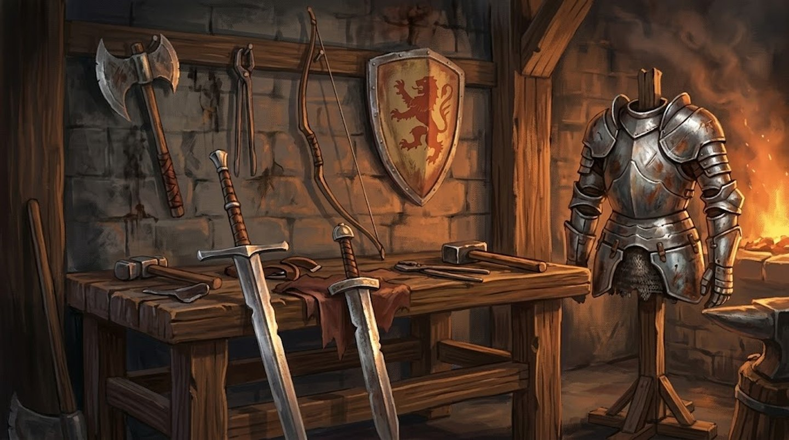

Regras de Equipamento¶

O que cada número da ficha de uma arma quer dizer, as propriedades que ela pode ter, e como o ataque se resolve.
As armas, escudos e armaduras em si estão na listagem de Equipamento — filtrável por estilo, família, tipo de dano, propriedade e preço.
Graus de Habilidade de Arma¶
Cada arma concede acesso a 3 habilidades, em ordem de aprendizado:
- Habilidade Básica
- Habilidade Avançada
- Habilidade Especial
O grau não define o custo — cada uma das três é uma habilidade completa, com suas próprias Intensidades I/II/III (◈, ◈◈, ◈◈◈). O que o grau define é o quanto a técnica entrega por Intensidade: a Básica atinge um alvo, a Especial costuma atingir uma área ou impor condições severas. O custo em Mana também sobe com o grau, então o investimento na arma fica visível na ficha:
| Grau | Intensidade I (◈) | Intensidade II (◈◈) | Intensidade III (◈◈◈) |
|---|---|---|---|
| Básica | 3 Mana | 9 Mana | 18 Mana |
| Avançada | 6 Mana | 15 Mana | 27 Mana |
| Especial | 9 Mana | 21 Mana | 36 Mana |
Especiais que cobrem 3 casas de raio ou mais são exceção: têm Custo fixo de ◈◈◈ + 36 Mana e um único resultado, já que a área por si só é o poder da técnica.
Aprendizado progressivo: nenhum grau é automático só por empunhar a arma — cada um precisa ser aprendido separadamente, gastando uma escolha de Habilidade de nível (ver Progressão de Nível). Dentro de uma mesma arma, os graus seguem uma ordem obrigatória: só é possível aprender a Avançada depois de já ter a Básica daquela arma, e a Especial depois de já ter a Avançada dela. Essa trava vale só dentro da mesma arma — não afeta a liberdade de escolher habilidades gerais ou de outras armas a qualquer momento, em qualquer ordem. Empunhar uma arma sem ter aprendido nenhuma Habilidade dela ainda permite o Ataque Básico, sem nenhum efeito extra (ver Criação de Personagem).
Tabela de Dados de Dano¶
Dado de dano por arma, definido pelo arquétipo/peso (não por progressão de personagem — nenhuma arma é mais forte só por vir "depois" na sequência de alguém).
Tipo é o tipo de dano que a arma causa (ver Tipos de Dano) — é o que decide se ela é boa ou inútil contra uma criatura específica: um esqueleto ri de espada e teme martelo.
Grupo é o estilo de combate predominante (Marciais, Pontaria ou Arcano — ver Grupos de Habilidade). Chaves lista as propriedades mecânicas da arma — toda arma tem exatamente uma de Leve/Duas Mãos, mais Híbrida/Ressonante e Efeito Especial quando aplicável. Requisito mostra o mínimo de atributo pra equipar a arma, quando houver (ver Requisito de Atributo Mínimo abaixo pra detalhes de cada uma).
Dentro de cada família, as armas são ordenadas por poder (dado crescente; empate resolvido por ordem alfabética). Preço está em prata (ver Dinheiro); armas lendárias e amaldiçoadas não têm preço porque não se compram — se acham.
Marciais¶
| Arma | Família | Dado | Tipo | Preço | Chaves | Requisito | Nota |
|---|---|---|---|---|---|---|---|
| Florete | Espadas Leves | 1d6 | Perfurante | 30 p | Leve | Ataque 10 | leve, arma de duelista |
| Gládio | Espadas Leves | 1d6 | Perfurante | 30 p | Híbrida, Leve | Ataque 10 e Magia 10 | espada curta, leve |
| Rapiers | Espadas Leves | 1d6 | Perfurante | 30 p | Leve | Ataque 10 | par de lâminas finas |
| Espada | Espadas Leves | 1d8 | Cortante | 60 p | Leve | — | arma versátil |
| Espada-Chave | Espadas Leves | 1d8 | Cortante | 60 p | Híbrida, Leve | Ataque 10 e Magia 10 | inspirada em Keyblade |
| Lâmina | Espadas Leves | 1d8 | Cortante | 60 p | Leve | Ataque 10 | espada padrão |
| Adagas | Lâminas Curtas | 1d4 | Perfurante | 15 p | Leve | Ataque 10 | par leve; identidade vem dos efeitos (derrubar, sangrar, risco/recompensa) |
| Garras | Lâminas Curtas | 1d6 | Cortante | 30 p | Leve | Ataque 10 | par leve |
| Punhal | Lâminas Curtas | 1d6 | Perfurante | 60 p | Leve, Efeito Especial | Ataque 15 | adaga leve |
| Sabres | Duplas Ágeis | 1d6 | Cortante | 30 p | Leve | Ataque 10 | par de lâminas leves |
| Tonfas | Duplas Ágeis | 1d6 | Impacto | 30 p | Leve | Ataque 10 | par leve |
| Manopla | Punhos | 1d6 | Impacto | 30 p | Leve | — | luta desarmada, golpes rápidos |
| Vembrassa | Punhos | 1d6 | Impacto | 30 p | Leve | Ataque 10 | reflexo da Manopla — punho aberto, mão esquerda |
| Soqueira Pesada | Punhos | 1d12 | Impacto | 480 p | Duas Mãos, Efeito Especial | Ataque 25 | arma de esmagamento, pesada |
| Alfange | Lâminas Curvas | 1d8 | Cortante | 60 p | Leve | Ataque 15 | lâmina única, mais pesada que a adaga |
| Foice | Lâminas Curvas | 1d10 | Cortante | 120 p | Duas Mãos | Ataque 10 | foice pesada |
| Gadanha | Lâminas Curvas | 1d10 | Cortante | 120 p | Duas Mãos | Ataque 15 | foice pesada de duas mãos |
| Lâmina Dupla | Hastes | 1d6 | Cortante | 30 p | Leve | Ataque 15 | arma ancestral com lâmina em cada extremidade |
| Bastão | Hastes | 1d8 | Impacto | 60 p | Duas Mãos | Ataque 10 | haste média |
| Tridente | Hastes | 1d8 | Perfurante | 60 p | Leve | Ataque 10 | haste de três pontas, combina com Escudo |
| Glaive | Hastes | 1d10 | Cortante | 120 p | Duas Mãos, Híbrida | Ataque 10 e Magia 10 | arma de haste, alcance |
| Lança | Hastes | 1d10 | Perfurante | 120 p | Duas Mãos | Ataque 10 | alcance, mais pesada |
| Pique | Hastes | 1d10 | Perfurante | 120 p | Duas Mãos | Ataque 15 | lâminas gêmeas que se combinam num pique de alcance |
| Machado | Impacto Pesado | 1d12 | Cortante | 240 p | Duas Mãos | Ataque 10 | pesado de duas mãos |
| Marreta Mágica | Impacto Pesado | 1d12 | Impacto | 240 p | Duas Mãos, Híbrida | Ataque 10 e Magia 10 | a mais pesada do arquétipo |
| Martelo | Impacto Pesado | 1d12 | Impacto | 240 p | Duas Mãos | Ataque 10 | arma de esmagamento, pesada |
| Chicote | Armas Flexíveis | 1d6 | Impacto | 30 p | Leve | Ataque 15 | alcance incomum pra uma arma corpo a corpo, puxa e prende |
| Mangual | Armas Flexíveis | 1d10 | Impacto | 120 p | Duas Mãos | Ataque 15 | golpe pesado e imprevisível, difícil de bloquear |
| Katana Muramasa | Lâminas Longas/Lendárias | 1d10 | Cortante | — | Duas Mãos, Efeito Especial | Ataque 15 | lâmina amaldiçoada, exige sangue |
| Lâmina do Crepúsculo | Lâminas Longas/Lendárias | 1d10 | Cortante | — | Duas Mãos, Efeito Especial | Ataque 20 | lâmina amaldiçoada — concede poder imenso, mas corrói com trevas quem a empunha |
| Katana Nodachi | Lâminas Longas/Lendárias | 1d10 | Cortante | — | Duas Mãos | Ataque 15 | lâmina longa clássica |
| Soluna | Lâminas Longas/Lendárias | 1d10 | Cortante | — | Duas Mãos | Ataque 20 | lâmina lendária, duas metades (Sol e Lua) que se combinam |
| Espada Senciente | Lâminas Longas/Lendárias | 1d12 | Cortante | — | Duas Mãos, Efeito Especial | Ataque 20 | absorve energias e dificulta a mobilidade de quem a empunha |
| Montante | Lâminas Longas/Lendárias | 1d12 | Cortante | — | Duas Mãos | Ataque 15 | espada grande de duas mãos |
| Violino | Focos Atípicos | 1d6 | Impacto | 30 p | Leve | Social 20 | instrumento usado como arma contundente |
| Báculo | Focos Atípicos | 1d8 | Impacto ou Arcano | 60 p | Leve, Ressonante | Ataque ou Magia 15 | bastão com lâmina circular e cristal, símbolo dos bardos |
| Vajras | Focos Atípicos | 1d8 | Impacto | 60 p | Leve | Magia 30 | arma mística, foco médio |
| Égide | Única | 1d6 | Cortante | 30 p | Duas Mãos | Ataque 20 | pacote fechado espada+escudo — identidade defensiva vem do Buff Supremo do grupo |
Pontaria¶
| Arma | Família | Dado | Tipo | Preço | Chaves | Requisito | Nota |
|---|---|---|---|---|---|---|---|
| Zarabatana | Dardos | 1d4 | Perfurante | 15 p | Leve | Ataque 10 | dardos leves, foco em veneno e status, não em dano bruto |
| Bestas | Arcos | 1d6 | Perfurante | 30 p | Leve | Ataque 10 | dupla empunhadura, tipo adagas/sabres |
| Gakkung | Arcos | 1d6 | Perfurante | 30 p | Duas Mãos | Ataque 30 | arco tradicional, mais leve/ágil |
| Arco | Arcos | 1d8 | Perfurante | 60 p | Duas Mãos | — | arma de precisão padrão |
| Balista | Arcos | 1d12 | Perfurante | 240 p | Duas Mãos | Ataque 20 | arma de cerco, a mais pesada |
| Chakram | Arremesso | 1d6 | Cortante | 30 p | Leve | Ataque 10 | anel de arremesso |
| Pistolas | Armas de Fogo Leves | 1d6 | Perfurante | 30 p | Leve | Ataque 10 | dupla de pistolas leves, usadas sempre em par |
| Flintlock | Armas de Fogo Leves | 1d8 | Perfurante | 60 p | Leve | Ataque 15 | pistola de precisão |
| Pistola Arcana | Armas de Fogo Leves | 1d8 | Perfurante | 60 p | Híbrida, Leve | Ataque 10 e Magia 10 | pólvora e magia crua no mesmo disparo |
| Revólver Maverick | Armas de Fogo Leves | 1d8 | Perfurante | 60 p | Leve, Híbrida | Ataque 10 e Magia 10 | revólver pesado, usado sempre sozinho |
| Espingarda | Armas de Fogo Pesadas | 1d10 | Perfurante | 120 p | Duas Mãos | Ataque 20 | "A Ruptura" — tiro único e devastador, arma dos Justiceiros |
| Metralhadora | Armas de Fogo Pesadas | 1d12 | Perfurante | 240 p | Duas Mãos | Ataque 20 | giratória, a mais pesada |
Arcano¶
| Arma | Família | Dado | Tipo | Preço | Chaves | Requisito | Nota |
|---|---|---|---|---|---|---|---|
| Leque | Focos Mágicos | 1d6 | Arcano | 30 p | Leve | Magia 10 | canalização mágica genérica |
| Manual | Focos Mágicos | 1d6 | Arcano | 30 p | Leve | Magia 10 | grimório leve |
| Pote | Focos Mágicos | 1d6 | Arcano | 30 p | Leve | Magia 10 | arremesso alquímico, leve e imprevisível |
| Cetro | Focos Mágicos | 1d8 | Arcano | 60 p | Leve | — | foco arcano genérico |
| Cubo Mágico | Focos Mágicos | 1d8 | Arcano | 60 p | Leve | Magia 20 | cubo cósmico senciente |
| Lâmpada | Focos Mágicos | 1d8 | Arcano | 60 p | Leve | Magia 25 | foco médio |
| Manopla Mística | Focos Mágicos | 1d8 | Arcano | 60 p | Leve | Magia 20 | invoca criaturas através de uma gema com pentagramas e hexagramas |
| Olho Mágico | Focos Mágicos | 1d8 | Arcano | 60 p | Leve | Magia 10 | genérica, sem elemento fixo |
| Orbe | Focos Mágicos | 1d8 | Arcano | 60 p | Leve | Magia 15 | esfera mágica que guarda poder |
| Bolsa de Truques | Focos Mágicos | 1d10 | Arcano | 120 p | Duas Mãos | Magia 15 | bolsa mágica com itens aleatórios (buquê, canhão, metralhadora) |
| Cajado | Focos Mágicos | 1d10 | Arcano | 120 p | Duas Mãos | Magia 15 | canalização pesada |
| Módulo Alado | Focos Mágicos | 1d10 | Arcano | 120 p | (especial — não é empunhado) | Magia 25 | enxame tecnológico de lâminas voadoras |
Tipos de Dano Físico¶
Toda arma causa um dos quatro tipos, e a tabela de cada família diz qual. O tipo não impõe efeito nenhum: o que a habilidade faz é o que está escrito na ficha dela — se um golpe de adaga faz sangrar, é porque a ficha diz que faz, não porque adagas sangram.
| Tipo | O que é | Contra o que costuma render |
|---|---|---|
| Cortante | espadas, machados, foices, garras | carne exposta, tendões |
| Perfurante | lanças, adagas, flechas, projéteis | brechas de armadura, alvos volumosos |
| Impacto | martelos, bastões, punhos, manguais | ossos, cascas, armaduras rígidas, esqueletos |
| Arcano | focos mágicos | o que não tem corpo pra ferir |
Onde o tipo decide de verdade: Resistência e Vulnerabilidade
O tipo pesa na hora em que ele encontra a criatura errada. Uma criatura Resistente a um tipo não sofre só metade do dano dele — ela também não sofre o efeito característico daquele tipo, mesmo que a habilidade o escreva:
- resistente a Cortante não fica Sangrando
- resistente a Impacto não é derrubado nem fica Lento
- resistente a Perfurante não leva o dano extra contra alvo preso
Um esqueleto não sangra, e um slime não cai de costas. É isso que faz escolher a arma importar — não uma tabela que obriga toda espada a fazer a mesma coisa.
Por que não existe mais uma assinatura obrigatória por tipo
Entre 2026-08-27 e 2026-08-28 os quatro tipos tiveram uma assinatura mecânica que vinha junto com o dano, sem a ficha precisar escrever. A intenção era boa — separar espada de martelo, que até então faziam a mesma coisa —, mas ela cobrava caro na mesa: além de Mana, Intensidade e do que a ficha já dizia, o jogador tinha uma quarta camada pra lembrar em todo golpe. E empilhava: uma habilidade de adaga que sangrasse passava a sangrar e perfurar.
O que sobrou dela é o que valia a pena — a interação com Resistência, acima, e a orientação de quem escreve criatura nova (ver Criando uma Criatura).
Propriedades de Arma¶
Explica cada valor possível da coluna Chaves das tabelas acima. Toda arma tem exatamente uma de Leve/Duas Mãos; as demais só aparecem quando aplicável.
Leve¶
Armas marcadas como Leve ocupam só uma mão pra funcionar — a mão secundária fica livre pra outra arma Leve (habilitando Dupla Empunhadura), pra um Escudo, ou fica livre pra magia/interação. Armas que não são Leve (Duas Mãos) exigem as duas mãos pra funcionar, mesmo quando usadas sozinhas — nenhuma combinação de mão secundária é possível com elas (salvo as exceções sancionadas de Dupla Empunhadura, abaixo).
Armas em par (Adagas, Sabres, Garras, Tonfas, Rapiers, Bestas, Pistolas) são um caso à parte: a chave Leve indica só o peso da categoria — o par ocupa as duas mãos e não deixa mão livre pra escudo, outra arma ou outro par.
Ter duas armas Leve equipadas não dá bônus automático algum — só habilita as habilidades gerais específicas marcadas com a chave Dupla Empunhadura pra aquele par exato, desenhadas uma combinação de cada vez (não existe uma combinação "livre" pra qualquer par de armas Leve).
(Caso especial: Módulo Alado não é empunhado — é um enxame que segue a usuária. Pra fins de regra, conta como Duas Mãos: não combina com escudo nem com outra arma. Égide também fica de fora — ela é um "pacote fechado" espada+escudo, independente do Escudo avulso abaixo.)
Híbrida¶
Algumas armas que misturam combate físico e magia são marcadas como Híbridas: o usuário escolhe, no momento do teste de ataque, usar Magia ou Ataque (o que for maior) — o mesmo Ataque de qualquer arma, seja ela Marcial ou de Pontaria. Isso vale pro teste de acerto de qualquer habilidade daquela arma, inclusive as 3 habilidades de arma.
Armas Híbridas até agora: Gládio (Ataque ou Magia), Espada-Chave (Ataque ou Magia), Pistola Arcana (Ataque ou Magia), Marreta Mágica (Ataque ou Magia), Glaive (Ataque ou Magia), Revólver Maverick (Ataque ou Magia).
Ressonante¶
Armas que canalizam som e magia ao mesmo tempo são marcadas como Ressonantes: o usuário escolhe, no momento do teste de ataque, entre Físico (Ataque, dano Impacto) e Arcano (Magia, dano Arcano). Diferente de Híbrida, aqui o tipo de dano muda junto com o atributo — Chave, alvos, alcance e efeito de controle continuam os mesmos nos dois modos. Isso vale pro teste de acerto de qualquer habilidade daquela arma, inclusive as 3 habilidades de arma.
Armas Ressonantes até agora: Báculo (Ataque/Impacto ou Magia/Arcano).
Requisito de Atributo Mínimo¶
Quase toda arma exige um mínimo de atributo pra ser equipada — sem atender o mínimo, a arma simplesmente não pode ser usada. O número reflete exotismo/raridade, não peso físico: uma arma comum e pesada (Machado, Martelo) pode ter um mínimo baixo, enquanto uma arma rara ou mística (Vajras, Lâmpada) tem um mínimo alto, mesmo sendo fisicamente leve.
- Armas Híbridas usam requisito "e" (as duas, não só a maior) — são duas disciplinas simultâneas (luta + magia), não uma alternativa à outra.
- Armas de som/carisma (ex: Violino) usam Social — Social é o atributo de carisma nesse sistema.
Livres de Requisito, de propósito: só Espada, Manopla, Arco e Cetro — uma opção genérica por estilo (Marciais, Marciais desarmado, Pontaria, Arcano), garantindo que todo personagem, mesmo com os pontos livres da criação espalhados por vários atributos, sempre tem pelo menos uma arma de cada família disponível desde o nível 0. Todas as outras 58 têm um mínimo — de 10 (a maioria) até 30 (Gakkung e Vajras, as mais exóticas do catálogo).
Material¶
Algumas armas foram forjadas — ou banhadas — em um material que importa contra criaturas específicas. Material é propriedade da arma individual, não do tipo: qualquer Espada pode ser uma Espada de Prata, e a maioria não é. Armas de material especial não se compram: se acham, como as lendárias.
Uma arma tem no máximo um material. Quando uma criatura tem resistência que só um material atravessa, a ficha dela diz qual — não existe tabela de "tipos de criatura" neste sistema, é sempre a criatura que declara o que a fere.
| Material | O que faz |
|---|---|
| Prata | O dano ignora a resistência a dano físico de licantropos e de criaturas amaldiçoadas. |
| Aço Consagrado | O dano ignora a resistência a dano físico de mortos-vivos, e a Regeneração deles não funciona até o fim do próximo turno. |
A lista cresce quando uma criatura precisar dela — material sem criatura que o exija é regra morta. Criaturas que declaram material hoje: Lobisomem (Prata) e Lich (Aço Consagrado).
Efeito Especial¶
Algumas armas têm uma mecânica única além das 3 habilidades normais — maldição, passiva, ou uma Reação exclusiva. O efeito completo está descrito na seção da própria arma, ao longo deste documento.
- Punhal — as Intensidades II e III da Especial causam um Ferimento Amaldiçoado: perde 1d4 de Vida no início de cada turno, e nenhum efeito remove ou cura — só o fim da cena fecha a ferida.
- Espada Senciente — reduz o Movimento do usuário em 1 casa enquanto equipada; sua energia de absorção vive na habilidade geral Esferas Sombrias.
- Katana Muramasa — a lâmina exige sangue: se não causar dano numa cena de combate, o usuário ganha Estresse.
- Soqueira Pesada — habilita a Reação exclusiva Impulso da Soqueira.
- Lâmina do Crepúsculo — lâmina amaldiçoada com cláusula de Risco: se algum dado de dano cair em 1, as trevas cobram — o usuário perde 1d6 de Vida.
Dupla Empunhadura¶
Quando um personagem usa duas armas específicas ao mesmo tempo (não uma arma "combo" própria, mas duas armas já existentes no Equipamento, empunhadas juntas), isso não vira uma entrada nova de arma — vira uma habilidade geral marcada com a chave Dupla Empunhadura, exigindo as duas armas equipadas simultaneamente pra ser usada.
O dano dessas habilidades é a soma dos dados das duas armas exigidas, rolados juntos na mesma habilidade.
Combinações de Dupla Empunhadura até agora: Lança + Espada (ver Investida Dupla, Combo Punitivo e Mergulho Furioso) e Katana Nodachi + Katana Muramasa (ver Dança das Lâminas Gêmeas, Corte Cruzado e Fúria das Lâminas Gêmeas).
As combinações são exceções sancionadas
As duas combinações acima envolvem armas Duas Mãos e valem mesmo assim: a técnica pressupõe manejo alternado — carregar as duas e alternar entre elas no fluxo dos golpes — e não exige que as armas sejam Leve nem que caibam nas duas mãos ao mesmo tempo. Fora dessas combinações nomeadas, a regra de Leve/Duas Mãos vale integralmente.
(Pendente: revisar retroativamente se alguma habilidade já escrita da Elesis deveria ganhar essa chave também.)
Escudos¶
Diferente de uma arma, um Escudo não concede as 3 habilidades de Básica/Avançada/Especial — ele ocupa a mão secundária e concede um bônus passivo de Evasão, sempre ativo, sem custo de Mana ou PA. Só pode ser equipado se a mão principal tiver uma arma Leve (ou estiver livre).
| Categoria | Bônus de Evasão | Preço | Restrição |
|---|---|---|---|
| Broquel | +5 | 20 p | Nenhuma — combina com qualquer arma Leve |
| Escudo | +10 | 40 p | Nenhuma — combina com qualquer arma Leve |
| Escudo Pesado | +15 | 90 p | Requisito Ataque 10 — combina com qualquer arma Leve |
| Escudo Torre | +25 | 200 p | Requisito Ataque 20 — reduz o Movimento do usuário em 1; combina com qualquer arma Leve |
Ter um Escudo equipado também habilita a habilidade geral Bloqueio, independente da categoria.
Armaduras¶
Armadura não soma mais na Evasão — quem cuida do lado "evadir" agora é o Escudo. A Armadura entra no outro lado da defesa: o termo + Vida de equipamento da fórmula de Vida Máxima, sempre ativo, sem custo de Mana ou PA. Ela ajuda a aguentar mais pancada, não a desviar dela — o que também evita um problema que a Couraça Natural das criaturas já resolvia de outro jeito: uma Armadura que somasse no atributo Defesa vazaria proteção pra Fortitude Física (veneno, doença, exaustão), e ela nunca devia proteger contra isso, só contra dano.
| Armadura | Vida | Requisito | Preço | Traços |
|---|---|---|---|---|
| Nenhuma | +0 | — | — | — |
| Tecido Reforçado | +10 | — | 40 p | Vantagem em testes de furtividade |
| Couro Batido | +10 | — | 40 p | Resistência a dano Cortante |
| Roupas Místicas | +0 | — | 40 p | +15 de Mana Máximo (zero proteção física é o preço) |
| Armadura de Escamas | +20 | Defesa 10 | 100 p | nenhum |
| Brigandina | +20 | Defesa 10 | 100 p | −1 de Movimento; Resistência a dano de Impacto |
| Cota de Malha | +20 | Defesa 10 | 100 p | −1 de Movimento; Resistência a dano Cortante |
| Meia-Armadura | +35 | Defesa 15 | 250 p | −1 de Movimento, e Desvantagem em testes de furtividade; Resistência a dano Perfurante |
| Armadura de Cerco | +55 | Defesa 20 | 250 p | −2 de Movimento, e Desvantagem em testes de furtividade; Resistência a todo dano físico (Impacto, Cortante e Perfurante); imune a Atordoado |
| Placa de Torneio | +75 | Defesa 25 | 300 p | −3 de Movimento, e Desvantagem em testes de furtividade; Resistência a todo dano físico (Impacto, Cortante e Perfurante) |
Um personagem ágil sem armadura pode ter Evasão parecida com a de um encouraçado, mas com bem menos Vida — a diferença entre os dois deixou de ser "quem se acerta menos" e virou "quem desvia" contra "quem aguenta": o ágil paga em risco (quando erra, machuca de verdade), o encouraçado paga em mobilidade e furtividade, mas tem uma reserva bem maior antes de cair.
Requisito de Defesa mínima, a partir da Armadura de Escamas: só faz sentido carregar proteção pesada de verdade se o corpo já aguenta o peso — sem atender o mínimo, a peça simplesmente não pode ser vestida (mesma regra das Armas e dos Escudos acima). As três armaduras leves (Tecido Reforçado, Couro Batido, Roupas Místicas) continuam sem requisito nenhum, junto com penalidade de Movimento (que num sistema onde deslocamento custa ◈ pesa mais do que parece) e a identidade de cada uma — Resistência, Vantagem/Desvantagem em furtividade e o bônus de Mana das Roupas Místicas nunca deixam uma armadura pior que andar sem nada, só diferente.
Adagas¶
As Adagas são, basicamente, espadas pequenas que exigem velocidade e precisão nos golpes.
Dano: 1d4
Corte Impactante — Básica
Um corte horizontal rápido, cravado no ponto certo pra desequilibrar o inimigo.
- Chave: Adagas - Básica
- Atributo: Ataque | Alcance: corpo a corpo | Alvos: 1 criatura
- Intensidade I — ◈ (1 PA) + 3 Mana: 1d4 de dano, +1d6 contra alvo preso
- Intensidade II — ◈◈ (2 PA) + 9 Mana: 1d6 de dano, +2d6 contra alvo preso, e derruba o alvo
- Intensidade III — ◈◈◈ (3 PA) + 18 Mana: 2d6 de dano, +3d6 contra alvo preso, derruba o alvo, e ele perde a próxima Reação
- Crítico: dano máximo dos dados da Intensidade usada + uma rolagem extra igual, e sobe 1 Intensidade
Fúria Fatal — Avançada
Um golpe imprevisível — às vezes de raspão, às vezes fatal.
- Chave: Adagas - Avançada
- Atributo: Ataque | Alcance: corpo a corpo | Alvos: 1 criatura
- Intensidade I — ◈ (1 PA) + 6 Mana: 2d4 de dano
- Intensidade II — ◈◈ (2 PA) + 15 Mana: 2d6 de dano + alvo fica Sangrando
- Intensidade III — ◈◈◈ (3 PA) + 27 Mana: 4d6 de dano + Sangrando, e todo ataque contra o alvo rola com Vantagem até o fim do próximo turno dele
- Crítico: dano máximo dos dados da Intensidade usada + uma rolagem extra igual, e sobe 1 Intensidade
Golpe Final — Especial
Recua num salto enquanto crava lâminas certeiras no chão, longe do alcance de contra-ataques.
- Chave: Adagas - Especial
- Custo fixo: ◈◈◈ (3 PA) + 36 Mana | Atributo: Ataque | Alvos: todas as criaturas em 3 casas de raio ao redor da posição original do usuário
- Alcance do recuo: até o valor de Movimento do personagem, em casas — o usuário se desloca pra trás, saindo da área afetada
- Acerto: 6d6 de dano em cada alvo + cada alvo fica Lento e é derrubado
- Crítico: dano máximo (36) + 6d6 extra em todos, Lento, e derruba cada alvo
Alfange¶
O Alfange (cimitarra) é uma espada curva, tipicamente usada por mercenários — exige muita agilidade de quem a empunha. Normalmente é usado junto de uma arma secundária, criando combos ágeis em corrente.
Requisito: Ataque +15 — sem esse mínimo, o Alfange não pode ser equipado.
Dano: 1d8
Fúria da Lâmina — Básica
Dois cortes baixos terminam com um golpe alto que lança o inimigo pro alto.
- Chave: Alfange - Básica
- Atributo: Ataque | Alvos: 1 criatura
- Intensidade I — ◈ (1 PA) + 3 Mana: 1d8 de dano + o alvo fica Sangrando
- Intensidade II — ◈◈ (2 PA) + 9 Mana: 1d10 de dano + derruba o alvo
- Intensidade III — ◈◈◈ (3 PA) + 18 Mana: 2d10 de dano + derruba o alvo, e ele perde a próxima Reação
- Crítico: dano máximo dos dados da Intensidade usada + uma rolagem extra igual, e sobe 1 Intensidade
Explosão em Corrente — Avançada
Uma corrente presa ao braço golpeia o inimigo e o arrasta pra perto.
- Chave: Alfange - Avançada
- Atributo: Ataque | Alcance: 6 casas | Alvos: 1 criatura
- Intensidade I — ◈ (1 PA) + 6 Mana: 2d8 de dano + puxa 2 casas
- Intensidade II — ◈◈ (2 PA) + 15 Mana: 2d10 de dano + puxa 3 casas e derruba o alvo
- Intensidade III — ◈◈◈ (3 PA) + 27 Mana: 4d10 de dano + puxa 5 casas e derruba o alvo
- Crítico: dano máximo dos dados da Intensidade usada + uma rolagem extra igual, e sobe 1 Intensidade
Golpe Fantasma — Especial
O corpo se desfaz em fumaça e avança rapidamente, cortando tudo no caminho antes de retornar à posição original.
- Chave: Alfange - Especial
- Atributo: Ataque | Alcance: linha de 6 casas | Alvos: todas as criaturas na linha
- Intensidade I — ◈ (1 PA) + 9 Mana: 3d8 de dano em cada alvo + cada alvo fica Sangrando
- Intensidade II — ◈◈ (2 PA) + 21 Mana: 3d10 de dano + derruba cada alvo
- Intensidade III — ◈◈◈ (3 PA) + 36 Mana: 6d10 de dano + derruba cada alvo, e cada alvo perde a próxima Reação
- Crítico: dano máximo dos dados da Intensidade usada + uma rolagem extra igual em todos os alvos, e sobe 1 Intensidade
Arco¶
O Arco é uma arma impulsora usada pra disparar flechas contra alvos distantes. Pode ser formado por uma única peça de madeira, tão alta quanto a estatura do atirador.
Dano: 1d8
Rajada de Flechas — Básica
Uma rajada de flechas disparada tão rápido que parece um único golpe.
- Chave: Arco - Básica
- Atributo: Ataque | Alcance: 8 casas | Alvos: 1 criatura
- Intensidade I — ◈ (1 PA) + 3 Mana: 1d8 de dano + alvo fica Marcado
- Intensidade II — ◈◈ (2 PA) + 9 Mana: 1d10 de dano + Marcado + derruba o alvo
- Intensidade III — ◈◈◈ (3 PA) + 18 Mana: 2d10 de dano + Marcado + derruba o alvo, e ele perde a próxima Reação
- Crítico: dano máximo dos dados da Intensidade usada + uma rolagem extra igual, e sobe 1 Intensidade
Chuva de Flechas — Avançada
Uma cortina de flechas desaba do céu, cobrindo uma área inteira antes que qualquer um consiga fugir.
- Chave: Arco - Avançada
- Custo fixo: ◈◈ (2 PA) + 27 Mana | Atributo: Ataque | Alcance: 8 casas (ponto de impacto) | Alvos: todas as criaturas em 3 casas de raio do ponto
- Acerto: 4d10 de dano + Terreno Difícil + cada alvo fica Lento até o fim do próximo turno dele
- Crítico: dano máximo (40) + 4d10 extra em todos, Terreno Difícil, e Lento
Tempestade de Flechas — Especial
Um turbilhão de flechas se espalha em todas as direções ao redor da arqueira.
- Chave: Arco - Especial
- Custo fixo: ◈◈◈ (3 PA) + 36 Mana | Atributo: Ataque | Alvos: todas as criaturas em 3 casas de raio ao redor do usuário
- Acerto: 6d10 de dano + Sangrando + derruba cada alvo
- Crítico: dano máximo (60) + 6d10 extra em todos, Sangrando, e derruba cada alvo
Báculo¶
O Báculo é constituído por um bastão com uma lâmina circular e um cristal no centro da lâmina. Essa arma mágica é o símbolo máximo dos bardos — o instrumento é capaz de direcionar o som e amplificá-lo por meio de vibrações do cristal sagrado raríssimo preso à ponta do bastão.
Arma Ressonante (ver Ressonante acima) — escolha, no teste de ataque, entre Físico (Ataque, dano Impacto) e Arcano (Magia, dano Arcano).
Dano: 1d8
Reverberação — Básica
Três golpes certeiros terminam erguendo o inimigo no ar.
- Chave: Báculo - Básica - Ressonante
- Atributo: Ataque ou Magia | Alcance: corpo a corpo | Alvos: 1 criatura
- Intensidade I — ◈ (1 PA) + 3 Mana: 1d8 de dano, derruba o alvo
- Intensidade II — ◈◈ (2 PA) + 9 Mana: 1d10 de dano + derruba o alvo
- Intensidade III — ◈◈◈ (3 PA) + 18 Mana: 2d10 de dano + derruba o alvo, e ele perde a próxima Reação
- Crítico: dano máximo dos dados da Intensidade usada + uma rolagem extra igual, e sobe 1 Intensidade
Tiro da Sereia — Avançada
Um orbe sonoro é disparado contra o alvo, cantando um chamado que atrai em vez de afastar.
- Chave: Báculo - Avançada - Ressonante
- Atributo: Ataque ou Magia | Alcance: 8 casas | Alvos: 1 criatura
- Intensidade I — ◈ (1 PA) + 6 Mana: 2d8 de dano + puxa 1 casa
- Intensidade II — ◈◈ (2 PA) + 15 Mana: 2d10 de dano + puxa 2 casas e derruba o alvo
- Intensidade III — ◈◈◈ (3 PA) + 27 Mana: 4d10 de dano + puxa 3 casas, derruba o alvo, e ele fica Marcado
- Crítico: dano máximo dos dados da Intensidade usada + uma rolagem extra igual, e sobe 1 Intensidade
Mergulho Sonoro — Especial
Um salto termina num mergulho certeiro, orbe e corpo atingindo juntos numa onda que atordoa.
- Chave: Báculo - Especial - Ressonante
- Atributo: Ataque ou Magia | Alcance do salto: até o valor de Movimento, em casas | Alvos: 2 casas de raio ao redor de um ponto de queda
- Intensidade I — ◈ (1 PA) + 9 Mana: 3d8 de dano em cada alvo, derruba cada alvo, e o usuário se desloca até o ponto
- Intensidade II — ◈◈ (2 PA) + 21 Mana: 3d10 de dano + derruba cada alvo
- Intensidade III — ◈◈◈ (3 PA) + 36 Mana: 6d10 de dano + derruba cada alvo, e cada alvo fica Atordoado
- Crítico: dano máximo dos dados da Intensidade usada + uma rolagem extra igual em todos os alvos, e sobe 1 Intensidade
Balista¶
A Balista é basicamente um Arco gigante que atira flechas enormes — a força delas pode ser comparada à de uma Montante.
Dano: 1d12
Tiro Hiper — Básica
Uma flecha comprida atravessa todo o campo de batalha numa linha reta.
- Chave: Balista - Básica
- Atributo: Ataque | Alcance: linha de 12 casas | Alvos: todas as criaturas na linha
- Intensidade I — ◈ (1 PA) + 3 Mana: 1d12 de dano em cada alvo, +1d6 contra alvo preso
- Intensidade II — ◈◈ (2 PA) + 9 Mana: 1d20 de dano + derruba cada alvo
- Intensidade III — ◈◈◈ (3 PA) + 18 Mana: 2d20 de dano + derruba cada alvo, e cada alvo perde a próxima Reação
- Crítico: dano máximo dos dados da Intensidade usada + uma rolagem extra igual em todos os alvos, e sobe 1 Intensidade
Vento Branco — Avançada
O arco gira como uma lâmina, num redemoinho que acerta tudo ao redor.
- Chave: Balista - Avançada
- Atributo: Ataque | Alcance: corpo a corpo | Alvos: todas as criaturas adjacentes
- Intensidade I — ◈ (1 PA) + 6 Mana: 2d12 de dano em cada alvo, +1d6 contra alvo preso
- Intensidade II — ◈◈ (2 PA) + 15 Mana: 2d20 de dano + derruba cada alvo
- Intensidade III — ◈◈◈ (3 PA) + 27 Mana: 4d20 de dano + derruba cada alvo, e cada alvo perde a próxima Reação
- Crítico: dano máximo dos dados da Intensidade usada + uma rolagem extra igual em todos os alvos, e sobe 1 Intensidade
Chakra — Especial
Flechas disparadas pro alto caem simultaneamente dos dois lados, com força total.
- Chave: Balista - Especial
- Atributo: Ataque | Alvos: duas linhas de 3 casas, uma de cada lado do usuário
- Intensidade I — ◈ (1 PA) + 9 Mana: 3d12 de dano em cada alvo, +1d6 contra alvo preso
- Intensidade II — ◈◈ (2 PA) + 21 Mana: 3d20 de dano + derruba cada alvo
- Intensidade III — ◈◈◈ (3 PA) + 36 Mana: 6d20 de dano + derruba cada alvo, e cada alvo perde a próxima Reação
- Crítico: dano máximo dos dados da Intensidade usada + uma rolagem extra igual em todos os alvos, e sobe 1 Intensidade
Bastão¶
O Bastão é uma arma que prega a luta a média distância.
Dano: 1d8
Golpe Ascendente — Básica
Dois golpes ascendentes erguem o inimigo no ar.
- Chave: Bastão - Básica
- Atributo: Ataque | Alcance: 2 casas | Alvos: 1 criatura
- Intensidade I — ◈ (1 PA) + 3 Mana: 1d8 de dano, derruba o alvo
- Intensidade II — ◈◈ (2 PA) + 9 Mana: 1d10 de dano + derruba o alvo
- Intensidade III — ◈◈◈ (3 PA) + 18 Mana: 2d10 de dano + derruba o alvo, e ele perde a próxima Reação
- Crítico: dano máximo dos dados da Intensidade usada + uma rolagem extra igual, e sobe 1 Intensidade
Corte em Espiral — Avançada
Três giros pra frente terminam num golpe final pesado.
- Chave: Bastão - Avançada
- Atributo: Ataque | Alcance: 2 casas | Alvos: 1 criatura
- Intensidade I — ◈ (1 PA) + 6 Mana: 2d8 de dano, derruba o alvo
- Intensidade II — ◈◈ (2 PA) + 15 Mana: 2d10 de dano e derruba o alvo, que fica Lento
- Intensidade III — ◈◈◈ (3 PA) + 27 Mana: 4d10 de dano, derruba o alvo, que fica Lento, e ele perde a próxima Reação, e levantar custa ◈ a mais
- Crítico: dano máximo dos dados da Intensidade usada + uma rolagem extra igual, e sobe 1 Intensidade
Investida Celestial — Especial
Um giro rápido crava o bastão no chão — o usuário salta ao alto e desaba com força total.
- Chave: Bastão - Especial
- Atributo: Ataque | Alcance do salto: até o valor de Movimento, em casas | Alvos: 2 casas de raio ao redor de um ponto de queda
- Intensidade I — ◈ (1 PA) + 9 Mana: 3d8 de dano em cada alvo, derruba cada alvo, e o usuário se desloca até o ponto
- Intensidade II — ◈◈ (2 PA) + 21 Mana: 3d10 de dano + derruba cada alvo
- Intensidade III — ◈◈◈ (3 PA) + 36 Mana: 6d10 de dano + derruba cada alvo, e cada alvo perde a próxima Reação
- Crítico: dano máximo dos dados da Intensidade usada + uma rolagem extra igual em todos os alvos, e sobe 1 Intensidade
Bestas¶
As Bestas são armas com aparência de espingarda, com um arco de flechas acoplado no lado oposto da coronha, acionado por gatilho, que projeta flechas mais curtas e leves. São consideradas pequenos "arcos mecânicos".
Dano: 1d6
Tiro em Leque — Básica
Quatro dardos disparam em formação de leque, cobrindo um arco à frente.
- Chave: Bestas - Básica
- Atributo: Ataque | Alcance: 6 casas | Alvos: até 2 criaturas diferentes ao alcance
- Intensidade I — ◈ (1 PA) + 3 Mana: 1d6 de dano em cada alvo, +1d6 contra alvo preso
- Intensidade II — ◈◈ (2 PA) + 9 Mana: 1d8 de dano + derruba cada alvo
- Intensidade III — ◈◈◈ (3 PA) + 18 Mana: 2d8 de dano + derruba cada alvo, e cada alvo perde a próxima Reação
- Crítico: dano máximo dos dados da Intensidade usada + uma rolagem extra igual em todos os alvos, e sobe 1 Intensidade
Chute Trampolim — Avançada
Um chute simples mas certeiro lança o inimigo pro alto.
- Chave: Bestas - Avançada
- Atributo: Ataque | Alcance: corpo a corpo | Alvos: 1 criatura
- Intensidade I — ◈ (1 PA) + 6 Mana: 2d6 de dano, +1d6 contra alvo preso
- Intensidade II — ◈◈ (2 PA) + 15 Mana: 2d8 de dano + alvo fica Atordoado até o fim do próximo turno dele
- Intensidade III — ◈◈◈ (3 PA) + 27 Mana: 4d8 de dano + alvo fica Atordoado até o fim do próximo turno dele, e, +3d6 contra alvo preso
- Crítico: dano máximo dos dados da Intensidade usada + uma rolagem extra igual, e sobe 1 Intensidade
Investida Retumbante — Especial
O corpo inteiro dispara pra frente como uma flecha viva, arrasando quem estiver no caminho.
- Chave: Bestas - Especial
- Atributo: Ataque | Alcance: linha de 5 casas | Alvos: todas as criaturas na linha
- Intensidade I — ◈ (1 PA) + 9 Mana: 3d6 de dano em cada alvo, +1d6 contra alvo preso, e o usuário se desloca até o fim da linha
- Intensidade II — ◈◈ (2 PA) + 21 Mana: 3d8 de dano + derruba cada alvo
- Intensidade III — ◈◈◈ (3 PA) + 36 Mana: 6d8 de dano + derruba cada alvo, e cada alvo perde a próxima Reação
- Crítico: dano máximo dos dados da Intensidade usada + uma rolagem extra igual em todos os alvos, e sobe 1 Intensidade
Bolsa de Truques¶
A Bolsa de Truques é uma arma mágica capaz de dar forma e vida aos pensamentos de quem a abre.
Dano: 1d10
Contra-Ataque Triplo — Básica
Um buquê é sacado da bolsa e golpeia três vezes em sequência.
- Chave: Bolsa de Truques - Básica
- Atributo: Magia | Alcance: corpo a corpo | Alvos: 1 criatura
- Intensidade I — ◈ (1 PA) + 3 Mana: 1d10 de dano + empurra 1 casa
- Intensidade II — ◈◈ (2 PA) + 9 Mana: 1d12 de dano + derruba o alvo
- Intensidade III — ◈◈◈ (3 PA) + 18 Mana: 2d12 de dano + derruba o alvo, e ele perde a próxima Reação
- Crítico: dano máximo dos dados da Intensidade usada + uma rolagem extra igual, e sobe 1 Intensidade
Canhão Portátil — Avançada
Um canhão é sacado da bolsa, disparando uma bomba que explode ao contato.
- Chave: Bolsa de Truques - Avançada
- Atributo: Magia | Alcance: 8 casas (ponto de impacto) | Alvos: 2 casas de raio do ponto
- Intensidade I — ◈ (1 PA) + 6 Mana: 2d10 de dano em cada alvo + empurra 1 casa cada alvo
- Intensidade II — ◈◈ (2 PA) + 15 Mana: 2d12 de dano + derruba cada alvo
- Intensidade III — ◈◈◈ (3 PA) + 27 Mana: 4d12 de dano + derruba cada alvo, e cada alvo perde a próxima Reação
- Crítico: dano máximo dos dados da Intensidade usada + uma rolagem extra igual em todos os alvos, e sobe 1 Intensidade
Metralhadora da Bolsa — Especial
Uma metralhadora surge da bolsa, disparando uma rajada certeira contra tudo à frente.
- Chave: Bolsa de Truques - Especial
- Atributo: Magia | Alcance: linha de 8 casas | Alvos: todas as criaturas na linha
- Intensidade I — ◈ (1 PA) + 9 Mana: 3d10 de dano em cada alvo + empurra 1 casa cada alvo
- Intensidade II — ◈◈ (2 PA) + 21 Mana: 3d12 de dano + derruba cada alvo
- Intensidade III — ◈◈◈ (3 PA) + 36 Mana: 6d12 de dano + derruba cada alvo, e cada alvo perde a próxima Reação
- Crítico: dano máximo dos dados da Intensidade usada + uma rolagem extra igual em todos os alvos, e sobe 1 Intensidade
Cajado¶
O Cajado é uma arma de poder gigantesco, capaz de canalizar uma quantidade muito maior de energia arcana, com muito mais precisão.
Armas mágicas como o Cajado não travam feitiços específicos — suas 3 habilidades são canalizações genéricas de energia bruta, sem elemento fixo.
Dano: 1d10
Impacto do Cajado — Básica
Um pulso de energia neutra é disparado da ponta do cajado.
- Chave: Cajado - Básica
- Atributo: Magia | Alcance: 8 casas | Alvos: 1 criatura
- Intensidade I — ◈ (1 PA) + 3 Mana: 1d10 de dano + empurra 1 casa
- Intensidade II — ◈◈ (2 PA) + 9 Mana: 1d12 de dano + derruba o alvo
- Intensidade III — ◈◈◈ (3 PA) + 18 Mana: 2d12 de dano + derruba o alvo, e ele perde a próxima Reação
- Crítico: dano máximo dos dados da Intensidade usada + uma rolagem extra igual, e sobe 1 Intensidade
Onda do Cajado — Avançada
Uma onda de força neutra se espalha a partir de um ponto escolhido.
- Chave: Cajado - Avançada
- Custo fixo: ◈◈ (2 PA) + 27 Mana | Atributo: Magia | Alcance: 8 casas (ponto de impacto) | Alvos: 3 casas de raio do ponto
- Acerto: 4d12 de dano + derruba cada alvo
- Crítico: dano máximo (48) + 4d12 extra em todos, e derruba cada alvo
Ruptura Arcana — Especial
A canalização se rompe de vez, liberando toda a energia acumulada ao redor do usuário.
- Chave: Cajado - Especial
- Custo fixo: ◈◈◈ (3 PA) + 36 Mana | Atributo: Magia | Alvos: todas as criaturas em 3 casas de raio ao redor do usuário
- Acerto: 6d12 de dano + derruba cada alvo
- Crítico: dano máximo (72) + 6d12 extra em todos, e derruba cada alvo
Cetro¶
Os Cetros geralmente são compostos por uma pequena esfera presa a um bastão curto. São muito usados por magos como meio de liberação de magia.
Armas mágicas como o Cetro não travam feitiços específicos — suas 3 habilidades são canalizações genéricas de energia bruta, sem elemento fixo. Os feitiços temáticos (fogo, gelo, cura etc.) ficam nos grupos de Habilidades, disponíveis pra qualquer personagem.
Dano: 1d8
Investida Arcana — Básica
Um pulso de energia bruta, sem forma definida, moldado pela vontade de quem o lança.
- Chave: Cetro - Básica
- Atributo: Magia | Alcance: 8 casas | Alvos: 1 criatura
- Intensidade I — ◈ (1 PA) + 3 Mana: 1d8 de dano + empurra 1 casa
- Intensidade II — ◈◈ (2 PA) + 9 Mana: 1d10 de dano + derruba o alvo
- Intensidade III — ◈◈◈ (3 PA) + 18 Mana: 2d10 de dano + derruba o alvo, e ele perde a próxima Reação
- Crítico: dano máximo dos dados da Intensidade usada + uma rolagem extra igual, e sobe 1 Intensidade
Descarga Arcana — Avançada
Uma onda de energia crua se espalha, indiferente à forma que toma.
- Chave: Cetro - Avançada
- Custo fixo: ◈◈ (2 PA) + 27 Mana | Atributo: Magia | Alcance: 8 casas (ponto de impacto) | Alvos: todas as criaturas em 3 casas de raio do ponto
- Acerto: 4d10 de dano + cada alvo perde a próxima Ação Básica e Reação
- Crítico: dano máximo (40) + 4d10 extra em todos
Explosão Arcana — Especial
Toda a energia acumulada é liberada de uma vez, num estrondo que sacode o campo de batalha.
- Chave: Cetro - Especial
- Custo fixo: ◈◈◈ (3 PA) + 36 Mana | Atributo: Magia | Alvos: todas as criaturas em 3 casas de raio ao redor do usuário
- Acerto: 6d10 de dano + derruba cada alvo
- Crítico: dano máximo (60) + 6d10 extra em todos, e derruba cada alvo
Chakram¶
O Chakram é uma antiga arma de arremesso, consistindo num anel de metal afiado na parte externa, com diâmetro entre 12 e 30 cm.
Habilidades originais inspiradas no clássico chakram de arremesso giratório (não ligadas a nenhum personagem específico de Grand Chase).
Dano: 1d6
Disco Cortante — Básica
Um disco de lâminas gira pelo ar, corta o alvo, e retorna à mão como se nunca tivesse partido.
- Chave: Chakram - Básica
- Atributo: Ataque | Alcance: 8 casas | Alvos: 1 criatura
- Intensidade I — ◈ (1 PA) + 3 Mana: 1d6 de dano + o alvo fica Sangrando
- Intensidade II — ◈◈ (2 PA) + 9 Mana: 1d8 de dano + derruba o alvo
- Intensidade III — ◈◈◈ (3 PA) + 18 Mana: 2d8 de dano + derruba o alvo, e ele perde a próxima Reação
- Crítico: dano máximo dos dados da Intensidade usada + uma rolagem extra igual, e sobe 1 Intensidade
Ricochete Mortal — Avançada
O chakram ricocheteia de inimigo a inimigo, cortando a todos antes de voltar à mão.
- Chave: Chakram - Avançada
- Atributo: Ataque | Alcance: 8 casas | Alvos: até 3 criaturas diferentes, atingidas em sequência
- Intensidade I — ◈ (1 PA) + 6 Mana: 2d6 de dano em cada alvo + cada alvo fica Sangrando
- Intensidade II — ◈◈ (2 PA) + 15 Mana: 2d8 de dano + Sangrando + o próximo ataque de um aliado contra qualquer um desses alvos nesta rodada rola com Vantagem
- Intensidade III — ◈◈◈ (3 PA) + 27 Mana: 4d8 de dano + Sangrando + o próximo ataque de um aliado contra qualquer um desses alvos nesta rodada rola com Vantagem, e o Sangrando causa 8d4 em vez de 4d4
- Crítico: dano máximo dos dados da Intensidade usada + uma rolagem extra igual em todos os alvos, e sobe 1 Intensidade
Círculo da Perdição — Especial
O chakram descreve um círculo perfeito ao redor de um ponto escolhido, cortando tudo que estiver na borda antes de retornar.
- Chave: Chakram - Especial
- Custo fixo: ◈◈◈ (3 PA) + 36 Mana | Atributo: Ataque | Alcance: 8 casas (centro) | Alvos: todas as criaturas na borda de um círculo de 3 casas de raio
- Acerto: 6d8 de dano + Terreno Difícil + cada alvo fica Lento até o fim do próximo turno dele
- Crítico: dano máximo (48) + 6d8 extra em todos, Terreno Difícil, e Lento
Chicote¶
O Chicote é uma arma flexível, de couro trançado ou correntes finas, capaz de golpear e prender a uma distância que nenhuma outra arma corpo a corpo alcança.
Dano: 1d6
Golpe de Correntes — Básica
O chicote estala no ar antes de fisgar o alvo à distância.
- Chave: Chicote - Básica
- Atributo: Ataque | Alcance: 4 casas | Alvos: 1 criatura
- Intensidade I — ◈ (1 PA) + 3 Mana: 1d6 de dano + puxa 1 casa
- Intensidade II — ◈◈ (2 PA) + 9 Mana: 1d8 de dano + puxa 2 casas
- Intensidade III — ◈◈◈ (3 PA) + 18 Mana: 2d8 de dano + puxa 4 casas e derruba o alvo
- Crítico: dano máximo dos dados da Intensidade usada + uma rolagem extra igual, e sobe 1 Intensidade
Chicotada em Arco — Avançada
Um giro largo faz o couro cortar o ar num arco amplo, alcançando vários alvos de uma vez.
- Chave: Chicote - Avançada
- Atributo: Ataque | Alcance: 3 casas | Alvos: até 3 criaturas diferentes ao alcance
- Intensidade I — ◈ (1 PA) + 6 Mana: 2d6 de dano em cada alvo, derruba cada alvo
- Intensidade II — ◈◈ (2 PA) + 15 Mana: 2d8 de dano, derruba cada alvo, que fica Lento
- Intensidade III — ◈◈◈ (3 PA) + 27 Mana: 4d8 de dano + cada alvo perde a próxima Reação e derruba cada alvo, que fica Lento, e levantar custa ◈ a mais
- Crítico: dano máximo dos dados da Intensidade usada + uma rolagem extra igual em todos os alvos, e sobe 1 Intensidade
Laço Inescapável — Especial
As correntes se enrolam no alvo como uma serpente, prendendo-o por completo.
- Chave: Chicote - Especial
- Atributo: Ataque | Alcance: 5 casas | Alvos: 1 criatura
- Intensidade I — ◈ (1 PA) + 9 Mana: 3d6 de dano + alvo fica Lento até o fim do próximo turno dele
- Intensidade II — ◈◈ (2 PA) + 21 Mana: 3d8 de dano + alvo fica Atordoado até o fim do próximo turno dele
- Intensidade III — ◈◈◈ (3 PA) + 36 Mana: 6d8 de dano + alvo fica Atordoado até o fim do próximo turno dele, e, derruba o alvo, que fica Lento — levantar custa ◈ a mais
- Crítico: dano máximo dos dados da Intensidade usada + uma rolagem extra igual, e sobe 1 Intensidade
Cubo Mágico¶
O Cubo Mágico é um cubo perfeito que gira eternamente sobre si mesmo, cada face revelando uma geometria impossível diferente. Reorganiza sua própria estrutura interna pra canalizar qualquer tipo de energia mágica, de acordo com a vontade de quem o carrega.
Arma mágica genérica como o Cetro, o Manual e o Orbe — não trava feitiços específicos, suas 3 habilidades são pulsos neutros de energia, sem elemento fixo.
Dano: 1d8
Impacto do Cubo — Básica
Um pulso de energia crua é disparado do cubo, sem forma ou tema definido.
- Chave: Cubo Mágico - Básica
- Atributo: Magia | Alcance: 8 casas | Alvos: 1 criatura
- Intensidade I — ◈ (1 PA) + 3 Mana: 1d8 de dano + empurra 1 casa
- Intensidade II — ◈◈ (2 PA) + 9 Mana: 1d10 de dano + derruba o alvo
- Intensidade III — ◈◈◈ (3 PA) + 18 Mana: 2d10 de dano + derruba o alvo, e ele perde a próxima Reação
- Crítico: dano máximo dos dados da Intensidade usada + uma rolagem extra igual, e sobe 1 Intensidade
Ruptura do Cubo — Avançada
O cubo gira sobre si mesmo antes de liberar uma onda de força numa área.
- Chave: Cubo Mágico - Avançada
- Custo fixo: ◈◈ (2 PA) + 27 Mana | Atributo: Magia | Alcance: 8 casas (ponto de impacto) | Alvos: 3 casas de raio do ponto
- Acerto: 4d10 de dano + derruba cada alvo
- Crítico: dano máximo (40) + 4d10 extra em todos, e derruba cada alvo
Colapso do Cubo — Especial
Todas as faces do cubo se abrem de uma vez, liberando toda a energia contida ao redor do usuário.
- Chave: Cubo Mágico - Especial
- Custo fixo: ◈◈◈ (3 PA) + 36 Mana | Atributo: Magia | Alvos: todas as criaturas em 3 casas de raio ao redor do usuário
- Acerto: 6d10 de dano + derruba cada alvo
- Crítico: dano máximo (60) + 6d10 extra em todos, e derruba cada alvo
Égide¶
A Égide é uma arma que trabalha em conjunto — constituída por um Escudo e uma Espada. Também pode invocar runas misteriosas pra ajudar na batalha.
O escudo do conjunto é parte da arma: não dá bônus passivo de Defesa nem habilita Bloqueio — a identidade defensiva da Égide vem das próprias habilidades dela.
Dano: 1d6
Talho Divino — Básica
Três cortes rápidos terminam num golpe descendente poderoso.
- Chave: Égide - Básica
- Atributo: Ataque | Alcance: corpo a corpo | Alvos: 1 criatura
- Intensidade I — ◈ (1 PA) + 3 Mana: 1d6 de dano + o alvo fica Sangrando
- Intensidade II — ◈◈ (2 PA) + 9 Mana: 1d8 de dano + derruba o alvo
- Intensidade III — ◈◈◈ (3 PA) + 18 Mana: 2d8 de dano + derruba o alvo, e ele perde a próxima Reação
- Crítico: dano máximo dos dados da Intensidade usada + uma rolagem extra igual, e sobe 1 Intensidade
Investida Furiosa — Avançada
Dois golpes ascendentes furiosos erguem o inimigo no ar.
- Chave: Égide - Avançada
- Atributo: Ataque | Alcance: corpo a corpo | Alvos: 1 criatura
- Intensidade I — ◈ (1 PA) + 6 Mana: 2d6 de dano + o alvo fica Sangrando
- Intensidade II — ◈◈ (2 PA) + 15 Mana: 2d8 de dano + o alvo fica Sangrando causando 8d4 e derruba o alvo
- Intensidade III — ◈◈◈ (3 PA) + 27 Mana: 4d8 de dano + o alvo fica Sangrando causando 12d4 e derruba o alvo
- Crítico: dano máximo dos dados da Intensidade usada + uma rolagem extra igual, e sobe 1 Intensidade
Estocada Arcana — Especial
Um círculo mágico se forma à frente da lâmina, e uma estocada o atravessa, perfurando tudo numa longa linha reta.
- Chave: Égide - Especial
- Atributo: Ataque | Alcance: linha de 8 casas | Alvos: todas as criaturas na linha
- Intensidade I — ◈ (1 PA) + 9 Mana: 3d6 de dano em cada alvo + cada alvo fica Sangrando
- Intensidade II — ◈◈ (2 PA) + 21 Mana: 3d8 de dano + derruba cada alvo
- Intensidade III — ◈◈◈ (3 PA) + 36 Mana: 6d8 de dano + derruba cada alvo, e cada alvo perde a próxima Reação
- Crítico: dano máximo dos dados da Intensidade usada + uma rolagem extra igual em todos os alvos, e sobe 1 Intensidade
Espada¶
A Espada é uma arma longa, formada por uma lâmina e uma empunhadura — uma das armas mais usadas que existem.
Dano: 1d8
Corte Incandescente — Básica
Um golpe preciso e brutal, direto ao ponto fraco do inimigo.
- Chave: Espada - Básica
- Atributo: Ataque | Alcance: corpo a corpo | Alvos: 1 criatura
- Intensidade I — ◈ (1 PA) + 3 Mana: 1d8 de dano + alvo fica Sangrando
- Intensidade II — ◈◈ (2 PA) + 9 Mana: 1d10 de dano + Sangrando + derruba o alvo
- Intensidade III — ◈◈◈ (3 PA) + 18 Mana: 2d10 de dano + Sangrando + derruba o alvo, e o Sangrando causa 8d4 em vez de 4d4
- Crítico: dano máximo dos dados da Intensidade usada + uma rolagem extra igual, e sobe 1 Intensidade
Redemoinho de Aço — Avançada
Um giro completo da lâmina, cortando tudo que estiver ao alcance.
- Chave: Espada - Avançada
- Atributo: Ataque | Alcance: corpo a corpo | Alvos: todas as criaturas adjacentes
- Intensidade I — ◈ (1 PA) + 6 Mana: 2d8 de dano em cada alvo + cada alvo fica Sangrando
- Intensidade II — ◈◈ (2 PA) + 15 Mana: 2d10 de dano + Sangrando + derruba cada alvo
- Intensidade III — ◈◈◈ (3 PA) + 27 Mana: 4d10 de dano + Sangrando + derruba cada alvo, e o Sangrando causa 8d4 em vez de 4d4
- Crítico: dano máximo dos dados da Intensidade usada + uma rolagem extra igual em todos os alvos, e sobe 1 Intensidade
Crítico X — Especial
O guerreiro salta e desaba sobre o chão como um meteoro de aço.
- Chave: Espada - Especial
- Atributo: Ataque | Alvos: área de 2 casas de raio ao redor de um ponto de queda
- Alcance do salto: até o valor de Movimento do personagem, em casas
- Intensidade I — ◈ (1 PA) + 9 Mana: 3d8 de dano em cada alvo atingido + cada alvo fica Sangrando, e o usuário se desloca até o ponto
- Intensidade II — ◈◈ (2 PA) + 21 Mana: 3d10 de dano + derruba cada alvo atingido
- Intensidade III — ◈◈◈ (3 PA) + 36 Mana: 6d10 de dano + derruba cada alvo atingido, e cada alvo perde a próxima Reação
- Crítico: dano máximo dos dados da Intensidade usada + uma rolagem extra igual em todos os alvos, e sobe 1 Intensidade
Espada Senciente¶
A Espada Senciente pode ser usada tanto ofensivamente quanto defensivamente. Absorve as energias de outros seres e também produz ataques com esferas sombrias. Porém, devido ao imenso poder da espada, ela também dificulta a mobilidade do usuário no processo.
Passiva: enquanto equipada, reduz o Movimento do usuário em 1 casa.
Habilidades originais mundanas. A absorção de energia mencionada acima vive como habilidade geral — ver Esferas Sombrias.
Dano: 1d12
Corte Pesado — Básica
Um golpe lento, mas de peso avassalador.
- Chave: Espada Senciente - Básica
- Atributo: Ataque | Alcance: corpo a corpo | Alvos: 1 criatura
- Intensidade I — ◈ (1 PA) + 3 Mana: 1d12 de dano + o alvo fica Sangrando
- Intensidade II — ◈◈ (2 PA) + 9 Mana: 1d20 de dano + derruba o alvo
- Intensidade III — ◈◈◈ (3 PA) + 18 Mana: 2d20 de dano + derruba o alvo, e ele perde a próxima Reação
- Crítico: dano máximo dos dados da Intensidade usada + uma rolagem extra igual, e sobe 1 Intensidade
Giro Devastador — Avançada
A lâmina gigante gira num arco largo, varrendo tudo ao redor.
- Chave: Espada Senciente - Avançada
- Atributo: Ataque | Alcance: corpo a corpo | Alvos: todas as criaturas adjacentes
- Intensidade I — ◈ (1 PA) + 6 Mana: 2d12 de dano em cada alvo + cada alvo fica Sangrando
- Intensidade II — ◈◈ (2 PA) + 15 Mana: 2d20 de dano + Sangrando + derruba cada alvo
- Intensidade III — ◈◈◈ (3 PA) + 27 Mana: 4d20 de dano + Sangrando + derruba cada alvo, e o Sangrando causa 8d4 em vez de 4d4
- Crítico: dano máximo dos dados da Intensidade usada + uma rolagem extra igual em todos os alvos, e sobe 1 Intensidade
Golpe Colossal — Especial
Um golpe único capaz de rachar o chão com seu impacto.
- Chave: Espada Senciente - Especial
- Atributo: Ataque | Alcance: corpo a corpo | Alvos: 1 criatura
- Intensidade I — ◈ (1 PA) + 9 Mana: 3d12 de dano + o alvo fica Sangrando
- Intensidade II — ◈◈ (2 PA) + 21 Mana: 3d20 de dano + o alvo fica Sangrando causando 8d4 e derruba o alvo
- Intensidade III — ◈◈◈ (3 PA) + 36 Mana: 6d20 de dano + derruba o alvo, e ele fica Atordoado até o fim do próximo turno dele
- Crítico: dano máximo dos dados da Intensidade usada + uma rolagem extra igual, e sobe 1 Intensidade
Espada-Chave¶
A Espada-Chave é uma lâmina cujo formato lembra uma chave antiga — capaz de abrir fechaduras que a força bruta jamais romperia, tanto no mundo físico quanto nas barreiras da própria magia.
Arma Híbrida (ver Híbrida abaixo) — usa Ataque ou Magia, o que for maior.
Dano: 1d8
Golpe Estiloso — Básica
Três cortes rápidos terminam com uma estocada poderosa que arremessa o inimigo pra trás.
- Chave: Espada-Chave - Básica - Híbrida
- Atributo: Ataque ou Magia | Alvos: 1 criatura
- Intensidade I — ◈ (1 PA) + 3 Mana: 1d8 de dano + o alvo fica Sangrando
- Intensidade II — ◈◈ (2 PA) + 9 Mana: 1d10 de dano + o alvo fica Sangrando causando 8d4
- Intensidade III — ◈◈◈ (3 PA) + 18 Mana: 2d10 de dano + o alvo fica Sangrando causando 12d4 e derruba o alvo
- Crítico: dano máximo dos dados da Intensidade usada + uma rolagem extra igual, e sobe 1 Intensidade
Investida Celestial — Avançada
Dois cortes seguidos de um golpe ascendente que lança o inimigo pro alto.
- Chave: Espada-Chave - Avançada - Híbrida
- Atributo: Ataque ou Magia | Alcance: corpo a corpo | Alvos: 1 criatura
- Intensidade I — ◈ (1 PA) + 6 Mana: 2d8 de dano + o alvo fica Sangrando
- Intensidade II — ◈◈ (2 PA) + 15 Mana: 2d10 de dano + derruba o alvo
- Intensidade III — ◈◈◈ (3 PA) + 27 Mana: 4d10 de dano + derruba o alvo, e ele perde a próxima Reação
- Crítico: dano máximo dos dados da Intensidade usada + uma rolagem extra igual, e sobe 1 Intensidade
Tempestade Divina — Especial
Uma sequência de estocadas termina num salto que invoca lâminas do chão ao redor.
- Chave: Espada-Chave - Especial - Híbrida
- Atributo: Ataque ou Magia | Alvos: 2 casas de raio ao redor do usuário
- Intensidade I — ◈ (1 PA) + 9 Mana: 3d8 de dano em cada alvo + cada alvo fica Sangrando
- Intensidade II — ◈◈ (2 PA) + 21 Mana: 3d10 de dano + derruba cada alvo
- Intensidade III — ◈◈◈ (3 PA) + 36 Mana: 6d10 de dano + derruba cada alvo, e cada alvo perde a próxima Reação
- Crítico: dano máximo dos dados da Intensidade usada + uma rolagem extra igual em todos os alvos, e sobe 1 Intensidade
Espingarda¶
Conhecida como "A Ruptura" — uma arma de cano duplo e grande poder, cujos tiros certeiros causam danos enormes. Usada pelos Justiceiros, uma classe de caçadores de recompensas de elite. Diz a lenda que ela já mandou almas direto pra Hades com um único tiro certeiro.
Dano: 1d10
Disparo Certeiro — Básica
Um único disparo carregado com força total, mirado no ponto fraco do alvo.
- Chave: Espingarda - Básica
- Atributo: Ataque | Alcance: 10 casas | Alvos: 1 criatura
- Intensidade I — ◈ (1 PA) + 3 Mana: 1d10 de dano, +1d6 contra alvo preso
- Intensidade II — ◈◈ (2 PA) + 9 Mana: 1d12 de dano + derruba o alvo
- Intensidade III — ◈◈◈ (3 PA) + 18 Mana: 2d12 de dano + derruba o alvo, e ele perde a próxima Reação
- Crítico: dano máximo dos dados da Intensidade usada + uma rolagem extra igual, e sobe 1 Intensidade
Estampido Fatal — Avançada
O coice da arma é quase tão brutal quanto o próprio disparo.
- Chave: Espingarda - Avançada
- Atributo: Ataque | Alcance: 10 casas | Alvos: 1 criatura
- Intensidade I — ◈ (1 PA) + 6 Mana: 2d10 de dano + empurra o alvo 2 casas, e o coice empurra o próprio usuário 1 casa pra trás
- Intensidade II — ◈◈ (2 PA) + 15 Mana: 2d12 de dano + empurra o alvo 3 casas e derruba, e o coice empurra o usuário 1 casa pra trás
- Intensidade III — ◈◈◈ (3 PA) + 27 Mana: 4d12 de dano + empurra o alvo 4 casas, derruba, e ele perde a próxima Reação; o coice empurra o usuário 2 casas pra trás
- Crítico: dano máximo dos dados da Intensidade usada + uma rolagem extra igual, e sobe 1 Intensidade
Sentença de Hades — Especial
Um disparo final e implacável — a lenda diz que essa arma já mandou almas direto pro além com um único tiro.
- Chave: Espingarda - Especial
- Atributo: Ataque | Alcance: 12 casas | Alvos: 1 criatura
- Efeito: em qualquer Intensidade, este ataque ignora o bônus de Armadura do alvo (a Defesa é calculada sem ele)
- Intensidade I — ◈ (1 PA) + 9 Mana: 3d10 de dano, +1d6 contra alvo preso
- Intensidade II — ◈◈ (2 PA) + 21 Mana: 3d12 de dano + derruba o alvo
- Intensidade III — ◈◈◈ (3 PA) + 36 Mana: 6d12 de dano + derruba o alvo, e ele perde a próxima Reação
- Crítico: dano máximo dos dados da Intensidade usada + uma rolagem extra igual, e sobe 1 Intensidade
Flintlock¶
As Flintlocks são usadas como armas de autodefesa militar. Seu alcance efetivo é curto, e são frequentemente utilizadas como complemento pra uma espada — diferente das Pistolas, feitas pra serem a arma principal do duo.
Dano: 1d8
Tiro Certeiro — Básica
Um disparo preciso atordoa o alvo e rouba um pouco de sua energia mágica.
- Chave: Flintlock - Básica
- Atributo: Ataque | Alcance: 5 casas | Alvos: 1 criatura
- Intensidade I — ◈ (1 PA) + 3 Mana: 1d8 de dano + alvo perde a próxima Reação
- Intensidade II — ◈◈ (2 PA) + 9 Mana: 1d10 de dano + alvo perde a próxima Reação e 2 Mana
- Intensidade III — ◈◈◈ (3 PA) + 18 Mana: 2d10 de dano + alvo perde a próxima Reação e 2 Mana, e fica Atordoado
- Crítico: dano máximo dos dados da Intensidade usada + uma rolagem extra igual, e sobe 1 Intensidade
Disparo Duplo — Avançada
Dois tiros rápidos e certeiros, cada um mirando um alvo diferente.
- Chave: Flintlock - Avançada
- Atributo: Ataque | Alcance: 5 casas | Alvos: até 2 criaturas diferentes ao alcance
- Intensidade I — ◈ (1 PA) + 6 Mana: 2d8 de dano em cada alvo, +1d6 contra alvo preso
- Intensidade II — ◈◈ (2 PA) + 15 Mana: 2d10 de dano + derruba cada alvo
- Intensidade III — ◈◈◈ (3 PA) + 27 Mana: 4d10 de dano + derruba cada alvo, e cada alvo perde a próxima Reação
- Crítico: dano máximo dos dados da Intensidade usada + uma rolagem extra igual em todos os alvos, e sobe 1 Intensidade
Saraivada — Especial
Uma rajada de tiros cobre uma área inteira, sem dar chance de fuga.
- Chave: Flintlock - Especial
- Custo fixo: ◈◈◈ (3 PA) + 36 Mana | Atributo: Ataque | Alcance: 5 casas (ponto de impacto) | Alvos: 3 casas de raio do ponto
- Acerto: 6d10 de dano + derruba cada alvo
- Crítico: dano máximo (60) + 6d10 extra em todos, e derruba cada alvo
Florete¶
O Florete é uma espada leve, altamente eficaz em duelos graças à velocidade com que pode ser manuseada. Apesar de não possuir gumes, se mostra muito afiado — por isso o estilo de luta é a esgrima, com ataques na horizontal (não na vertical, como nas espadas), causando dano no oponente através da perfuração.
Dano: 1d6
Investida — Básica
Um avanço rápido crava a lâmina fina no alvo antes que ele perceba.
- Chave: Florete - Básica
- Atributo: Ataque | Alcance do avanço: até o valor de Movimento, em casas | Alvos: 1 criatura
- Intensidade I — ◈ (1 PA) + 3 Mana: 1d6 de dano, +1d6 contra alvo preso, e o usuário se desloca até o alvo
- Intensidade II — ◈◈ (2 PA) + 9 Mana: 1d8 de dano + derruba o alvo
- Intensidade III — ◈◈◈ (3 PA) + 18 Mana: 2d8 de dano + derruba o alvo, e ele perde a próxima Reação
- Crítico: dano máximo dos dados da Intensidade usada + uma rolagem extra igual, e sobe 1 Intensidade
Investida Frenética — Avançada
Uma sequência de estocadas rápidas avança em linha reta, perfurando tudo no caminho.
- Chave: Florete - Avançada
- Atributo: Ataque | Alcance: linha de 5 casas | Alvos: todas as criaturas na linha
- Intensidade I — ◈ (1 PA) + 6 Mana: 2d6 de dano em cada alvo, +1d6 contra alvo preso
- Intensidade II — ◈◈ (2 PA) + 15 Mana: 2d8 de dano + derruba cada alvo
- Intensidade III — ◈◈◈ (3 PA) + 27 Mana: 4d8 de dano + derruba cada alvo, e cada alvo perde a próxima Reação
- Crítico: dano máximo dos dados da Intensidade usada + uma rolagem extra igual em todos os alvos, e sobe 1 Intensidade
Giro Circular — Especial
Um giro completo com a lâmina estendida arremessa qualquer um que estiver perto pra longe.
- Chave: Florete - Especial
- Atributo: Ataque | Alvos: todas as criaturas adjacentes
- Intensidade I — ◈ (1 PA) + 9 Mana: 3d6 de dano em cada alvo, +1d6 contra alvo preso
- Intensidade II — ◈◈ (2 PA) + 21 Mana: 3d8 de dano, +2d6 contra alvo preso
- Intensidade III — ◈◈◈ (3 PA) + 36 Mana: 6d8 de dano, +3d6 contra alvo preso, e derruba cada alvo
- Crítico: dano máximo dos dados da Intensidade usada + uma rolagem extra igual em todos os alvos, e sobe 1 Intensidade
Foice¶
A Foice é um instrumento composto por uma lâmina encurvada presa a um cabo longo.
Dano: 1d10
Corte da Foice — Básica
Um corte largo e certeiro, guiado pelo peso da lâmina curva.
- Chave: Foice - Básica
- Atributo: Ataque | Alcance: corpo a corpo | Alvos: 1 criatura
- Intensidade I — ◈ (1 PA) + 3 Mana: 1d10 de dano + o alvo fica Sangrando
- Intensidade II — ◈◈ (2 PA) + 9 Mana: 1d12 de dano + derruba o alvo
- Intensidade III — ◈◈◈ (3 PA) + 18 Mana: 2d12 de dano + derruba o alvo, e ele perde a próxima Reação
- Crítico: dano máximo dos dados da Intensidade usada + uma rolagem extra igual, e sobe 1 Intensidade
Ceifar — Avançada
Um giro amplo da foice, ceifando tudo ao alcance como trigo maduro.
- Chave: Foice - Avançada
- Atributo: Ataque | Alcance: corpo a corpo | Alvos: todas as criaturas adjacentes
- Intensidade I — ◈ (1 PA) + 6 Mana: 2d10 de dano em cada alvo + cada alvo fica Sangrando
- Intensidade II — ◈◈ (2 PA) + 15 Mana: 2d12 de dano + Sangrando + derruba cada alvo
- Intensidade III — ◈◈◈ (3 PA) + 27 Mana: 4d12 de dano + Sangrando + derruba cada alvo, e o Sangrando causa 8d4 em vez de 4d4
- Crítico: dano máximo dos dados da Intensidade usada + uma rolagem extra igual em todos os alvos, e sobe 1 Intensidade
Golpe da Colheita — Especial
Um golpe final, pesado e implacável, como o fim de um ciclo.
- Chave: Foice - Especial
- Atributo: Ataque | Alcance: corpo a corpo | Alvos: 1 criatura
- Intensidade I — ◈ (1 PA) + 9 Mana: 3d10 de dano + alvo fica Marcado
- Intensidade II — ◈◈ (2 PA) + 21 Mana: 3d12 de dano + Marcado + derruba o alvo
- Intensidade III — ◈◈◈ (3 PA) + 36 Mana: 6d12 de dano + Marcado + derruba o alvo, e ele perde a próxima Reação
- Crítico: dano máximo dos dados da Intensidade usada + uma rolagem extra igual, e sobe 1 Intensidade
Gadanha¶
A Gadanha é constituída por uma longa haste e uma lâmina curvilínea bastante afiada na ponta.
Dano: 1d10
Justiça Selvagem — Básica
Um corte rápido é seguido por um salto e um golpe diagonal certeiro.
- Chave: Gadanha - Básica
- Atributo: Ataque | Alcance: corpo a corpo | Alvos: 1 criatura
- Intensidade I — ◈ (1 PA) + 3 Mana: 1d10 de dano + o alvo fica Sangrando
- Intensidade II — ◈◈ (2 PA) + 9 Mana: 1d12 de dano + derruba o alvo
- Intensidade III — ◈◈◈ (3 PA) + 18 Mana: 2d12 de dano + derruba o alvo, e ele perde a próxima Reação
- Crítico: dano máximo dos dados da Intensidade usada + uma rolagem extra igual, e sobe 1 Intensidade
Asa de Corvo — Avançada
A foice é arremessada a curta distância, girando furiosamente no ar antes de retornar à mão.
- Chave: Gadanha - Avançada
- Atributo: Ataque | Alcance: 6 casas | Alvos: 1 criatura
- Intensidade I — ◈ (1 PA) + 6 Mana: 2d10 de dano + puxa 2 casas
- Intensidade II — ◈◈ (2 PA) + 15 Mana: 2d12 de dano + puxa 3 casas e derruba o alvo
- Intensidade III — ◈◈◈ (3 PA) + 27 Mana: 4d12 de dano + puxa 5 casas e derruba o alvo
- Crítico: dano máximo dos dados da Intensidade usada + uma rolagem extra igual, e sobe 1 Intensidade
Ceifa Ampla — Especial
Um giro completo com a foice ceifa tudo ao alcance, num arco largo e implacável.
- Chave: Gadanha - Especial
- Atributo: Ataque | Alcance: corpo a corpo | Alvos: todas as criaturas adjacentes
- Intensidade I — ◈ (1 PA) + 9 Mana: 3d10 de dano em cada alvo + cada alvo fica Sangrando
- Intensidade II — ◈◈ (2 PA) + 21 Mana: 3d12 de dano + cada alvo fica Sangrando
- Intensidade III — ◈◈◈ (3 PA) + 36 Mana: 6d12 de dano + cada alvo fica Sangrando, e o Sangrando causa 8d4 em vez de 4d4
- Crítico: dano máximo dos dados da Intensidade usada + uma rolagem extra igual em todos os alvos, e sobe 1 Intensidade
Gakkung¶
O Gakkung é considerado o Arco mais poderoso de todos, reunindo a potência da Balista, a velocidade de disparo das Bestas e a precisão do Arco leve. Essa versatilidade também o torna extremamente difícil de manusear.
Requisito: Ataque +30 — sem esse mínimo, o Gakkung não pode ser equipado.
Dano: 1d6
Tiro Carregado — Básica
Um golpe de ombro desequilibra o inimigo antes de uma rajada de flechas certeiras.
- Chave: Gakkung - Básica
- Atributo: Ataque | Alcance do avanço: até o valor de Movimento, em casas | Alvos: 1 criatura
- Intensidade I — ◈ (1 PA) + 3 Mana: 1d6 de dano, +1d6 contra alvo preso, e o usuário se desloca até o alvo
- Intensidade II — ◈◈ (2 PA) + 9 Mana: 1d8 de dano + derruba o alvo
- Intensidade III — ◈◈◈ (3 PA) + 18 Mana: 2d8 de dano + derruba o alvo, e ele perde a próxima Reação
- Crítico: dano máximo dos dados da Intensidade usada + uma rolagem extra igual, e sobe 1 Intensidade
Chute Aéreo — Avançada
Um salto termina num chute certeiro desde o alto.
- Chave: Gakkung - Avançada
- Atributo: Ataque | Alcance: corpo a corpo | Alvos: 1 criatura
- Intensidade I — ◈ (1 PA) + 6 Mana: 2d6 de dano, +1d6 contra alvo preso
- Intensidade II — ◈◈ (2 PA) + 15 Mana: 2d8 de dano, +2d6 contra alvo preso, e derruba o alvo
- Intensidade III — ◈◈◈ (3 PA) + 27 Mana: 4d8 de dano, +3d6 contra alvo preso, e derruba o alvo
- Crítico: dano máximo dos dados da Intensidade usada + uma rolagem extra igual, e sobe 1 Intensidade
Rajada Explosiva — Especial
Uma saraivada de flechas cobre uma área inteira, explodindo ao contato.
- Chave: Gakkung - Especial
- Custo fixo: ◈◈◈ (3 PA) + 36 Mana | Atributo: Ataque | Alcance: 8 casas | Alvos: 3 casas de raio do ponto
- Acerto: 6d8 de dano + derruba cada alvo
- Crítico: dano máximo (48) + 6d8 extra em todos, e derruba cada alvo
Garras¶
As Garras são luvas com lâminas acopladas, letais quando bem usadas. São de uso comum entre assassinos profissionais, e extremamente perigosas.
Dano: 1d6
Passo Hipersônico — Básica
Uma investida veloz corta o inimigo com uma sequência de golpes rápidos.
- Chave: Garras - Básica
- Atributo: Ataque | Alcance: até o valor de Movimento, em casas | Alvos: 1 criatura
- Intensidade I — ◈ (1 PA) + 3 Mana: 1d6 de dano + o alvo fica Sangrando, e o usuário se desloca até o alvo
- Intensidade II — ◈◈ (2 PA) + 9 Mana: 1d8 de dano + derruba o alvo
- Intensidade III — ◈◈◈ (3 PA) + 18 Mana: 2d8 de dano + derruba o alvo, e ele perde a próxima Reação
- Crítico: dano máximo dos dados da Intensidade usada + uma rolagem extra igual, e sobe 1 Intensidade
Lâmina Sem Limites — Avançada
Uma rajada de cortes rápidos termina com o lutador atacando repetidamente pelas costas do inimigo.
- Chave: Garras - Avançada
- Atributo: Ataque | Alcance: corpo a corpo | Alvos: 1 criatura
- Intensidade I — ◈ (1 PA) + 6 Mana: 2d6 de dano + derruba o alvo
- Intensidade II — ◈◈ (2 PA) + 15 Mana: 2d8 de dano + alvo perde a próxima Reação + derruba o alvo
- Intensidade III — ◈◈◈ (3 PA) + 27 Mana: 4d8 de dano + derruba o alvo, e ele perde a próxima Reação
- Crítico: dano máximo dos dados da Intensidade usada + uma rolagem extra igual, e sobe 1 Intensidade
Investida das Sombras — Especial
As garras se tornam um borrão, cortando tudo ao redor num único movimento contínuo.
- Chave: Garras - Especial
- Atributo: Ataque | Alcance: corpo a corpo | Alvos: todas as criaturas adjacentes
- Intensidade I — ◈ (1 PA) + 9 Mana: 3d6 de dano em cada alvo + cada alvo fica Sangrando
- Intensidade II — ◈◈ (2 PA) + 21 Mana: 3d8 de dano + cada alvo fica Sangrando
- Intensidade III — ◈◈◈ (3 PA) + 36 Mana: 6d8 de dano + cada alvo fica Sangrando, e o Sangrando causa 8d4 em vez de 4d4
- Crítico: dano máximo dos dados da Intensidade usada + uma rolagem extra igual em todos os alvos, e sobe 1 Intensidade
Gládio¶
O Gládio é uma espada especial que permite executar magia ao mesmo tempo em que se usa a perícia como espadachim.
Requisito: Ataque +10 e Magia +10 — por ser Híbrida (duas disciplinas simultâneas, não uma ou outra), o Gládio exige um mínimo nas duas, não só na maior.
Arma Híbrida (ver Híbrida abaixo) — usa Ataque ou Magia, o que for maior.
Dano: 1d6
Investida Mágica — Básica
Uma estocada rápida, impulsionada por magia ancestral.
- Chave: Gládio - Básica - Híbrida
- Atributo: Ataque ou Magia | Alcance do avanço: até o valor de Movimento, em casas | Alvos: 1 criatura
- Intensidade I — ◈ (1 PA) + 3 Mana: 1d6 de dano, +1d6 contra alvo preso, e o usuário se desloca até o alvo
- Intensidade II — ◈◈ (2 PA) + 9 Mana: 1d8 de dano + derruba o alvo
- Intensidade III — ◈◈◈ (3 PA) + 18 Mana: 2d8 de dano + derruba o alvo, e ele perde a próxima Reação
- Crítico: dano máximo dos dados da Intensidade usada + uma rolagem extra igual, e sobe 1 Intensidade
Corte em Cruz — Avançada
Dois cortes cruzados seguidos de uma aura protetora ao redor do lutador.
- Chave: Gládio - Avançada - Híbrida
- Atributo: Ataque ou Magia | Alvos: 1 criatura
- Intensidade I — ◈ (1 PA) + 6 Mana: 2d6 de dano + usuário ganha Escudo de 1d6 pontos
- Intensidade II — ◈◈ (2 PA) + 15 Mana: 2d8 de dano + derruba o alvo + usuário ganha Escudo de 1d6 pontos
- Intensidade III — ◈◈◈ (3 PA) + 27 Mana: 4d8 de dano + derruba o alvo + usuário ganha Escudo de 1d6 pontos, e ele perde a próxima Reação
- Crítico: dano máximo dos dados da Intensidade usada + uma rolagem extra igual, e sobe 1 Intensidade
Lâmina Tempestuosa — Especial
Uma rajada de golpes furiosos que termina com um corte devastador — o lutador pode se mover livremente durante o ataque.
- Chave: Gládio - Especial - Híbrida
- Atributo: Ataque ou Magia | Alcance: corpo a corpo | Alvos: até 3 criaturas à escolha
- Efeito adicional: o usuário pode se mover livremente até seu Movimento em casas durante o ataque, sem gastar PA extra
- Intensidade I — ◈ (1 PA) + 9 Mana: 3d6 de dano em cada alvo + cada alvo fica Sangrando
- Intensidade II — ◈◈ (2 PA) + 21 Mana: 3d8 de dano + Sangrando + derruba cada alvo
- Intensidade III — ◈◈◈ (3 PA) + 36 Mana: 6d8 de dano + Sangrando + derruba cada alvo, e o Sangrando causa 8d4 em vez de 4d4
- Crítico: dano máximo dos dados da Intensidade usada + uma rolagem extra igual em todos os alvos, e sobe 1 Intensidade
Glaive¶
O Glaive é constituído por uma lança de lâmina larga, com runas arcanas em sua empunhadura.
Arma Híbrida (ver Híbrida acima) — usa Ataque ou Magia, o que for maior.
Dano: 1d10
Espada Infinita — Básica
Duas varreduras baixas erguem o inimigo, seguidas de dois golpes ascendentes e um último golpe mais forte.
- Chave: Glaive - Básica - Híbrida
- Atributo: Ataque ou Magia | Alcance: corpo a corpo | Alvos: 1 criatura
- Intensidade I — ◈ (1 PA) + 3 Mana: 1d10 de dano + o alvo fica Sangrando
- Intensidade II — ◈◈ (2 PA) + 9 Mana: 1d12 de dano + derruba o alvo
- Intensidade III — ◈◈◈ (3 PA) + 18 Mana: 2d12 de dano + derruba o alvo, e ele perde a próxima Reação
- Crítico: dano máximo dos dados da Intensidade usada + uma rolagem extra igual, e sobe 1 Intensidade
Investida do Dragão — Avançada
O usuário dispara pra frente, atravessando qualquer coisa no caminho.
- Chave: Glaive - Avançada - Híbrida
- Atributo: Ataque ou Magia | Alcance: linha de 6 casas | Alvos: todas as criaturas na linha
- Intensidade I — ◈ (1 PA) + 6 Mana: 2d10 de dano em cada alvo + cada alvo fica Sangrando, e o usuário se desloca até o fim da linha
- Intensidade II — ◈◈ (2 PA) + 15 Mana: 2d12 de dano + derruba cada alvo
- Intensidade III — ◈◈◈ (3 PA) + 27 Mana: 4d12 de dano + derruba cada alvo, e cada alvo perde a próxima Reação
- Crítico: dano máximo dos dados da Intensidade usada + uma rolagem extra igual em todos os alvos, e sobe 1 Intensidade
Salto do Dragão — Especial
Um salto termina numa queda diagonal, a lâmina cravando fundo no ponto de impacto.
- Chave: Glaive - Especial - Híbrida
- Atributo: Ataque ou Magia | Alcance do salto: até o valor de Movimento, em casas | Alvos: 2 casas de raio ao redor de um ponto de queda
- Intensidade I — ◈ (1 PA) + 9 Mana: 3d10 de dano em cada alvo + cada alvo fica Sangrando, e o usuário se desloca até o ponto
- Intensidade II — ◈◈ (2 PA) + 21 Mana: 3d12 de dano + derruba cada alvo
- Intensidade III — ◈◈◈ (3 PA) + 36 Mana: 6d12 de dano + derruba cada alvo, e cada alvo perde a próxima Reação
- Crítico: dano máximo dos dados da Intensidade usada + uma rolagem extra igual em todos os alvos, e sobe 1 Intensidade
Katana Muramasa¶
A Katana Muramasa é um sabre curvado com gume de apenas um lado. Espadas desse tipo ficaram famosas por serem incrivelmente afiadas, mas ganharam reputação sombria de serem amaldiçoadas: dizia-se que, uma vez retirada da bainha, a lâmina exigia sangue antes de poder ser guardada de novo, levando o portador à loucura ou ao assassinato.
Requisito: Ataque +15 — sem esse mínimo, a arma não pode ser equipada.
Maldição: a lâmina exige sangue. Se o usuário terminar uma cena de combate sem ter causado dano com ela pelo menos uma vez, ganha 1 ponto de Estresse (ver Estresse).
Dano: 1d10
Vento Místico — Básica
Dois cortes rápidos terminam com um salto e um golpe duplo no ar.
- Chave: Katana Muramasa - Básica
- Atributo: Ataque | Alcance: corpo a corpo | Alvos: 1 criatura
- Intensidade I — ◈ (1 PA) + 3 Mana: 1d10 de dano + o alvo fica Sangrando
- Intensidade II — ◈◈ (2 PA) + 9 Mana: 1d12 de dano + derruba o alvo
- Intensidade III — ◈◈◈ (3 PA) + 18 Mana: 2d12 de dano + derruba o alvo, e ele perde a próxima Reação
- Crítico: dano máximo dos dados da Intensidade usada + uma rolagem extra igual, e sobe 1 Intensidade
Relâmpago do Vento — Avançada
Um corte ascendente é seguido por um salto e uma estocada mergulhante desde o alto.
- Chave: Katana Muramasa - Avançada
- Atributo: Ataque | Alcance do salto: até o valor de Movimento, em casas | Alvos: 1 criatura
- Intensidade I — ◈ (1 PA) + 6 Mana: 2d10 de dano + o alvo fica Sangrando, e o usuário se desloca até o alvo
- Intensidade II — ◈◈ (2 PA) + 15 Mana: 2d12 de dano + derruba o alvo
- Intensidade III — ◈◈◈ (3 PA) + 27 Mana: 4d12 de dano + derruba o alvo, e ele perde a próxima Reação
- Crítico: dano máximo dos dados da Intensidade usada + uma rolagem extra igual, e sobe 1 Intensidade
Rajada Violenta — Especial
Um salto termina com três ondas de energia cortante disparadas pra frente, deixando feridas profundas.
- Chave: Katana Muramasa - Especial
- Atributo: Ataque | Alcance: linha de 8 casas | Alvos: todas as criaturas na linha
- Intensidade I — ◈ (1 PA) + 9 Mana: 3d10 de dano em cada alvo + cada alvo fica Sangrando
- Intensidade II — ◈◈ (2 PA) + 21 Mana: 3d12 de dano + cada alvo fica Sangrando
- Intensidade III — ◈◈◈ (3 PA) + 36 Mana: 6d12 de dano + cada alvo fica Sangrando, e o Sangrando causa 8d4 em vez de 4d4
- Crítico: dano máximo dos dados da Intensidade usada + uma rolagem extra igual em todos os alvos, e sobe 1 Intensidade
Katana Nodachi¶
A Katana Nodachi é uma espada longa guardada numa bainha presa ao atacante, treinado pra sacá-la à velocidade da luz — permitindo golpes extremamente rápidos num piscar de olhos. É uma arma difícil de empunhar, por causa de suas técnicas quase esquecidas.
Requisito: Ataque +15 — sem esse mínimo, a arma não pode ser equipada.
Dano: 1d10
Corte da Fúria — Básica
Um corte único, rápido e certeiro.
- Chave: Katana Nodachi - Básica
- Atributo: Ataque | Alcance: corpo a corpo | Alvos: 1 criatura
- Intensidade I — ◈ (1 PA) + 3 Mana: 1d10 de dano + o alvo fica Sangrando
- Intensidade II — ◈◈ (2 PA) + 9 Mana: 1d12 de dano + derruba o alvo
- Intensidade III — ◈◈◈ (3 PA) + 18 Mana: 2d12 de dano + derruba o alvo, e ele perde a próxima Reação
- Crítico: dano máximo dos dados da Intensidade usada + uma rolagem extra igual, e sobe 1 Intensidade
Lâmina Fantasma — Avançada
Uma rajada de cortes rápidos termina com um golpe final decisivo.
- Chave: Katana Nodachi - Avançada
- Atributo: Ataque | Alcance: corpo a corpo | Alvos: 1 criatura
- Intensidade I — ◈ (1 PA) + 6 Mana: 2d10 de dano + o alvo fica Sangrando
- Intensidade II — ◈◈ (2 PA) + 15 Mana: 2d12 de dano + alvo fica Sangrando
- Intensidade III — ◈◈◈ (3 PA) + 27 Mana: 4d12 de dano + alvo fica Sangrando, e o Sangrando causa 8d4 em vez de 4d4
- Crítico: dano máximo dos dados da Intensidade usada + uma rolagem extra igual, e sobe 1 Intensidade
Espírito da Lâmina — Especial
Uma energia espectral triplica o alcance da lâmina — dois cortes ascendentes terminam num golpe descendente devastador.
- Chave: Katana Nodachi - Especial
- Atributo: Ataque | Alcance: corpo a corpo | Alvos: todas as criaturas adjacentes
- Intensidade I — ◈ (1 PA) + 9 Mana: 3d10 de dano em cada alvo + cada alvo fica Sangrando
- Intensidade II — ◈◈ (2 PA) + 21 Mana: 3d12 de dano + derruba cada alvo
- Intensidade III — ◈◈◈ (3 PA) + 36 Mana: 6d12 de dano + derruba cada alvo, e cada alvo perde a próxima Reação
- Crítico: dano máximo dos dados da Intensidade usada + uma rolagem extra igual em todos os alvos, e sobe 1 Intensidade
Lâmina¶
A Lâmina é uma arma constituída por dois gumes e uma empunhadura. É uma arma ancestral da Espada — depois de muito tempo, a Lâmina foi considerada primitiva e substituída pelas espadas.
Habilidades de arma são sempre mundanas — técnica e força física, nunca elemento/magia inata (ver Onda de Chamas, que representa a mesma fantasia como feitiço geral).
Dano: 1d8
Lâmina Esmagadora — Básica
Um giro completo da lâmina antes de descer com um golpe brutal.
- Chave: Lâmina - Básica
- Atributo: Ataque | Alcance: corpo a corpo | Alvos: 1 criatura
- Intensidade I — ◈ (1 PA) + 3 Mana: 1d8 de dano + o alvo fica Sangrando
- Intensidade II — ◈◈ (2 PA) + 9 Mana: 1d10 de dano + derruba o alvo
- Intensidade III — ◈◈◈ (3 PA) + 18 Mana: 2d10 de dano + derruba o alvo, e ele perde a próxima Reação
- Crítico: dano máximo dos dados da Intensidade usada + uma rolagem extra igual, e sobe 1 Intensidade
Corte Rasante — Avançada
A lâmina raspa o chão numa investida rasteira, cortando as pernas de quem estiver no caminho.
- Chave: Lâmina - Avançada
- Atributo: Ataque | Alcance: linha de 8 casas | Alvos: todas as criaturas na linha
- Intensidade I — ◈ (1 PA) + 6 Mana: 2d8 de dano em cada alvo + cada alvo fica Sangrando
- Intensidade II — ◈◈ (2 PA) + 15 Mana: 2d10 de dano + cada alvo fica Sangrando causando 8d4 e derruba cada alvo
- Intensidade III — ◈◈◈ (3 PA) + 27 Mana: 4d10 de dano + cada alvo fica Sangrando causando 12d4 e derruba cada alvo
- Crítico: dano máximo dos dados da Intensidade usada + uma rolagem extra igual em todos os alvos, e sobe 1 Intensidade
Punição Ascendente — Especial
Um corte ascendente gigantesco, executado duas vezes no ar — a distância pode ser ajustada em pleno voo.
- Chave: Lâmina - Especial
- Atributo: Ataque | Alcance: até o valor de Movimento, em casas (ajustável em pleno ataque) | Alvos: 1 criatura, atingida 2 vezes
- Intensidade I — ◈ (1 PA) + 9 Mana: 3d8 de dano por acerto + alvo fica Sangrando por acerto
- Intensidade II — ◈◈ (2 PA) + 21 Mana: 3d10 de dano + Sangrando + derruba (aplicado no 2º acerto)
- Intensidade III — ◈◈◈ (3 PA) + 36 Mana: 6d10 de dano + Sangrando + derruba (aplicado no 2º acerto), e o Sangrando causa 8d4 em vez de 4d4
- Crítico: dano máximo dos dados da Intensidade usada + uma rolagem extra igual, e sobe 1 Intensidade
Lâmina do Crepúsculo¶
A Lâmina do Crepúsculo é uma arma muito poderosa, mas também muito perigosa. Ela concede um poder inimaginável ao usuário, mas potencializa a escuridão em seu coração, amaldiçoando-o a ser consumido pelas trevas. Pra controlá-la, é preciso de um coração mágico — uma jóia que amplia a bondade da alma e contrabalança a maldição.
Dano: 1d10
Ferrão Sombrio — Básica
A lâmina é arremessada pro alto, apanhada de volta num corte, seguido de vários golpes rápidos e uma estocada final.
- Chave: Lâmina do Crepúsculo - Básica
- Atributo: Ataque | Alcance: corpo a corpo | Alvos: 1 criatura
- Intensidade I — ◈ (1 PA) + 3 Mana: 1d10 de dano + alvo fica Sangrando
- Intensidade II — ◈◈ (2 PA) + 9 Mana: 1d12 de dano + Sangrando e derruba o alvo
- Intensidade III — ◈◈◈ (3 PA) + 18 Mana: 2d12 de dano + Sangrando, derruba o alvo, e ele perde a próxima Reação
- Risco: se algum dos dados de dano cair em 1, as trevas cobram o preço — o usuário perde 1d6 de Vida
- Crítico: dano máximo dos dados da Intensidade usada + uma rolagem extra igual, e sobe 1 Intensidade
Explosão de Rocha — Avançada
Uma rajada de golpes é seguida por um salto e uma barragem final, terminando numa explosão poderosa.
- Chave: Lâmina do Crepúsculo - Avançada
- Atributo: Ataque | Alcance: 8 casas | Alvos: 2 casas de raio do ponto
- Intensidade I — ◈ (1 PA) + 6 Mana: 2d10 de dano em cada alvo + cada alvo fica Sangrando
- Intensidade II — ◈◈ (2 PA) + 15 Mana: 2d12 de dano + derruba cada alvo
- Intensidade III — ◈◈◈ (3 PA) + 27 Mana: 4d12 de dano + derruba cada alvo, e cada alvo perde a próxima Reação
- Crítico: dano máximo dos dados da Intensidade usada + uma rolagem extra igual em todos os alvos, e sobe 1 Intensidade
Ferrão do Tornado — Especial
Uma array giratória de lâminas espectrais é arremessada à frente, gira furiosamente no ponto mais distante, e retorna cortando tudo de novo.
- Chave: Lâmina do Crepúsculo - Especial
- Atributo: Ataque | Alcance: linha de 6 casas | Alvos: todas as criaturas na linha, atingidas até 2 vezes (ida e volta)
- Intensidade I — ◈ (1 PA) + 9 Mana: 3d10 de dano por acerto + o alvo fica Sangrando por acerto
- Intensidade II — ◈◈ (2 PA) + 21 Mana: 3d12 de dano + derruba por acerto
- Intensidade III — ◈◈◈ (3 PA) + 36 Mana: 6d12 de dano + derruba por acerto, e ele perde a próxima Reação
- Crítico: dano máximo dos dados da Intensidade usada + uma rolagem extra igual, e sobe 1 Intensidade
Lâmina Dupla¶
A Lâmina Dupla é uma arma ancestral, com um punho no centro e uma lâmina em cada extremidade. Utilizada no passado por druidas chamados de sentinelas.
Dano: 1d6
Corte Reverso — Básica
Dois cortes seguidos de um giro veloz lançam o inimigo pro alto.
- Chave: Lâmina Dupla - Básica
- Atributo: Ataque | Alcance: corpo a corpo | Alvos: 1 criatura
- Intensidade I — ◈ (1 PA) + 3 Mana: 1d6 de dano + o alvo fica Sangrando
- Intensidade II — ◈◈ (2 PA) + 9 Mana: 1d8 de dano + derruba o alvo
- Intensidade III — ◈◈◈ (3 PA) + 18 Mana: 2d8 de dano + derruba o alvo, e ele perde a próxima Reação
- Crítico: dano máximo dos dados da Intensidade usada + uma rolagem extra igual, e sobe 1 Intensidade
Impacto da Alma — Avançada
Uma aura de força se ergue da lâmina, arremessando o inimigo através do campo de batalha.
- Chave: Lâmina Dupla - Avançada
- Atributo: Ataque | Alcance: corpo a corpo | Alvos: 1 criatura
- Intensidade I — ◈ (1 PA) + 6 Mana: 2d6 de dano + o alvo fica Sangrando
- Intensidade II — ◈◈ (2 PA) + 15 Mana: 2d8 de dano + o alvo fica Sangrando causando 8d4
- Intensidade III — ◈◈◈ (3 PA) + 27 Mana: 4d8 de dano + o alvo fica Sangrando causando 12d4 e derruba o alvo
- Crítico: dano máximo dos dados da Intensidade usada + uma rolagem extra igual, e sobe 1 Intensidade
Fantasma Giratório — Especial
O corpo gira em alta velocidade, avançando através de tudo que estiver no caminho.
- Chave: Lâmina Dupla - Especial
- Atributo: Ataque | Alcance: linha de 6 casas | Alvos: todas as criaturas na linha
- Intensidade I — ◈ (1 PA) + 9 Mana: 3d6 de dano em cada alvo + cada alvo fica Sangrando, e o usuário se desloca até o fim da linha
- Intensidade II — ◈◈ (2 PA) + 21 Mana: 3d8 de dano + derruba cada alvo
- Intensidade III — ◈◈◈ (3 PA) + 36 Mana: 6d8 de dano + derruba cada alvo, e cada alvo perde a próxima Reação
- Crítico: dano máximo dos dados da Intensidade usada + uma rolagem extra igual em todos os alvos, e sobe 1 Intensidade
Lâmpada¶
As Lâmpadas Mágicas são armas muito poderosas — pra usá-las, o guerreiro precisa fazer um contrato místico com espíritos. Só quem se encaixa em todos os requisitos se torna um verdadeiro feiticeiro.
Requisito: Magia +25 — sem esse mínimo, a Lâmpada não pode ser equipada.
Armas mágicas como a Lâmpada não travam feitiços específicos — suas 3 habilidades são canalizações genéricas de energia bruta, sem elemento fixo.
Dano: 1d8
Chama da Lâmpada — Básica
Uma chama neutra é liberada da lâmpada, sem forma definida.
- Chave: Lâmpada - Básica
- Atributo: Magia | Alcance: 8 casas | Alvos: 1 criatura
- Intensidade I — ◈ (1 PA) + 3 Mana: 1d8 de dano + empurra 1 casa
- Intensidade II — ◈◈ (2 PA) + 9 Mana: 1d10 de dano + derruba o alvo
- Intensidade III — ◈◈◈ (3 PA) + 18 Mana: 2d10 de dano + derruba o alvo, e ele perde a próxima Reação
- Crítico: dano máximo dos dados da Intensidade usada + uma rolagem extra igual, e sobe 1 Intensidade
Clarão da Lâmpada — Avançada
Um clarão intenso se espalha numa área, sem tema ou elemento definido.
- Chave: Lâmpada - Avançada
- Custo fixo: ◈◈ (2 PA) + 27 Mana | Atributo: Magia | Alcance: 8 casas (ponto de impacto) | Alvos: 3 casas de raio do ponto
- Acerto: 4d10 de dano + derruba cada alvo
- Crítico: dano máximo (40) + 4d10 extra em todos, e derruba cada alvo
Explosão Espiritual — Especial
Toda a energia contida na lâmpada é liberada de uma vez, ao redor do usuário.
- Chave: Lâmpada - Especial
- Custo fixo: ◈◈◈ (3 PA) + 36 Mana | Atributo: Magia | Alvos: todas as criaturas em 3 casas de raio ao redor do usuário
- Acerto: 6d10 de dano + derruba cada alvo
- Crítico: dano máximo (60) + 6d10 extra em todos, e derruba cada alvo
Lança¶
A Lança é uma arma constituída por uma longa vara com uma ponta afiada. Os guerreiros que a utilizam se especializam em combate a média distância, o que pode ser uma grande vantagem contra um oponente que lute corpo a corpo.
Dano: 1d10
Golpe de Ataque — Básica
A lança gira no ar antes de bater com força total no chão.
- Chave: Lança - Básica
- Atributo: Ataque | Alcance: 2 casas | Alvos: 1 criatura
- Intensidade I — ◈ (1 PA) + 3 Mana: 1d10 de dano, +1d6 contra alvo preso
- Intensidade II — ◈◈ (2 PA) + 9 Mana: 1d12 de dano + derruba o alvo
- Intensidade III — ◈◈◈ (3 PA) + 18 Mana: 2d12 de dano + derruba o alvo, e ele perde a próxima Reação
- Crítico: dano máximo dos dados da Intensidade usada + uma rolagem extra igual, e sobe 1 Intensidade
Investida Ascendente — Avançada
Duas estocadas rápidas terminam com um golpe ascendente que ergue o inimigo do chão.
- Chave: Lança - Avançada
- Atributo: Ataque | Alcance: 2 casas | Alvos: 1 criatura
- Intensidade I — ◈ (1 PA) + 6 Mana: 2d10 de dano, +1d6 contra alvo preso
- Intensidade II — ◈◈ (2 PA) + 15 Mana: 2d12 de dano + alvo fica Atordoado até o fim do próximo turno dele
- Intensidade III — ◈◈◈ (3 PA) + 27 Mana: 4d12 de dano + alvo fica Atordoado até o fim do próximo turno dele, e, +3d6 contra alvo preso
- Crítico: dano máximo dos dados da Intensidade usada + uma rolagem extra igual, e sobe 1 Intensidade
Corte Compacto — Especial
Um giro horizontal completo acerta tudo à frente e atrás.
- Chave: Lança - Especial
- Atributo: Ataque | Alcance: corpo a corpo | Alvos: todas as criaturas adjacentes
- Intensidade I — ◈ (1 PA) + 9 Mana: 3d10 de dano em cada alvo, +1d6 contra alvo preso
- Intensidade II — ◈◈ (2 PA) + 21 Mana: 3d12 de dano + derruba cada alvo
- Intensidade III — ◈◈◈ (3 PA) + 36 Mana: 6d12 de dano + derruba cada alvo, e cada alvo perde a próxima Reação
- Crítico: dano máximo dos dados da Intensidade usada + uma rolagem extra igual em todos os alvos, e sobe 1 Intensidade
Leque¶
O Leque é uma arma de grande poder, capaz de controlar os ventos — transforma movimentos fluidos de dança ou combate em rajadas cortantes, furacões e barreiras de vento protetoras.
Arma mágica genérica como o Cetro, o Manual e o Orbe — não trava feitiços específicos, suas 3 habilidades são pulsos neutros de energia, sem elemento fixo. A afinidade com vento descrita acima é só inspiração — a magia de Vento em si mora em Mágicas por Elemento → Vento, disponível pra qualquer personagem, não só quem usa o Leque.
Dano: 1d6
Lampejo — Básica
Um clarão repentino atinge o alvo com um golpe de luz condensada.
- Chave: Leque - Básica
- Atributo: Magia | Alcance: 8 casas | Alvos: 1 criatura
- Intensidade I — ◈ (1 PA) + 3 Mana: 1d6 de dano + empurra 1 casa
- Intensidade II — ◈◈ (2 PA) + 9 Mana: 1d8 de dano + derruba o alvo
- Intensidade III — ◈◈◈ (3 PA) + 18 Mana: 2d8 de dano + derruba o alvo, e ele perde a próxima Reação
- Crítico: dano máximo dos dados da Intensidade usada + uma rolagem extra igual, e sobe 1 Intensidade
Olho da Tempestade — Avançada
Uma esfera de energia paira no ar antes de se romper num pequeno vórtice.
- Chave: Leque - Avançada
- Atributo: Magia | Alcance: 8 casas (ponto de impacto) | Alvos: 2 casas de raio do ponto
- Intensidade I — ◈ (1 PA) + 6 Mana: 2d6 de dano em cada alvo + empurra 1 casa cada alvo
- Intensidade II — ◈◈ (2 PA) + 15 Mana: 2d8 de dano + derruba cada alvo
- Intensidade III — ◈◈◈ (3 PA) + 27 Mana: 4d8 de dano + derruba cada alvo, e cada alvo perde a próxima Reação
- Crítico: dano máximo dos dados da Intensidade usada + uma rolagem extra igual em todos os alvos, e sobe 1 Intensidade
Lampejo Final — Especial
Uma onda de força é disparada à distância, atravessando tudo em seu caminho.
- Chave: Leque - Especial
- Atributo: Magia | Alcance: linha de 10 casas | Alvos: todas as criaturas na linha
- Intensidade I — ◈ (1 PA) + 9 Mana: 3d6 de dano em cada alvo + empurra 1 casa cada alvo
- Intensidade II — ◈◈ (2 PA) + 21 Mana: 3d8 de dano + derruba cada alvo
- Intensidade III — ◈◈◈ (3 PA) + 36 Mana: 6d8 de dano + derruba cada alvo, e cada alvo perde a próxima Reação
- Crítico: dano máximo dos dados da Intensidade usada + uma rolagem extra igual em todos os alvos, e sobe 1 Intensidade
Machado¶
O Machado é uma arma constituída por um cabo mediano e duas cunhas. Poucos conseguem utilizá-la, pois exige uma grande quantidade de força bruta.
Requisito: Ataque +10 — sem esse mínimo, o Machado não pode ser equipado.
Dano: 1d12
Lâminas Gêmeas — Básica
Dois golpes largos em sequência, arremessando o inimigo pro alto.
- Chave: Machado - Básica
- Atributo: Ataque | Alvos: 1 criatura
- Intensidade I — ◈ (1 PA) + 3 Mana: 1d12 de dano + o alvo fica Sangrando
- Intensidade II — ◈◈ (2 PA) + 9 Mana: 1d20 de dano + derruba o alvo
- Intensidade III — ◈◈◈ (3 PA) + 18 Mana: 2d20 de dano + derruba o alvo, e ele perde a próxima Reação
- Crítico: dano máximo dos dados da Intensidade usada + uma rolagem extra igual, e sobe 1 Intensidade
Fúria do Titã — Avançada
Uma pancada brutal que arremessa o inimigo longe, com toda a força do machado.
- Chave: Machado - Avançada
- Atributo: Ataque | Alvos: 1 criatura
- Intensidade I — ◈ (1 PA) + 6 Mana: 2d12 de dano + o alvo fica Sangrando
- Intensidade II — ◈◈ (2 PA) + 15 Mana: 2d20 de dano + o alvo fica Sangrando causando 8d4 e derruba o alvo
- Intensidade III — ◈◈◈ (3 PA) + 27 Mana: 4d20 de dano + o alvo fica Sangrando causando 12d4 e derruba o alvo
- Crítico: dano máximo dos dados da Intensidade usada + uma rolagem extra igual, e sobe 1 Intensidade
Arremesso Selvagem — Especial
O machado voa da mão, corta tudo em seu caminho, e retorna às mãos do guerreiro — atingindo de novo na volta.
- Chave: Machado - Especial
- Atributo: Ataque | Alcance: linha de 8 casas | Alvos: todas as criaturas na linha, atingidas até 2 vezes (ida e volta)
- Intensidade I — ◈ (1 PA) + 9 Mana: 3d12 de dano por acerto + Sangrando (perde 4d4 de Vida no início do próximo turno) por acerto
- Intensidade II — ◈◈ (2 PA) + 21 Mana: 3d20 de dano + Sangrando + derruba por acerto
- Intensidade III — ◈◈◈ (3 PA) + 36 Mana: 6d20 de dano + Sangrando + derruba por acerto, e o Sangrando causa 8d4 em vez de 4d4
- Crítico: dano máximo dos dados da Intensidade usada + uma rolagem extra igual, e sobe 1 Intensidade
Mangual¶
O Mangual é uma bola de ferro presa por uma corrente a um cabo curto — o peso solto e imprevisível torna cada golpe difícil de antecipar ou bloquear.
Dano: 1d10
Balanço Brutal — Básica
A bola de ferro gira antes de desabar com um peso imprevisível.
- Chave: Mangual - Básica
- Atributo: Ataque | Alcance: corpo a corpo | Alvos: 1 criatura
- Intensidade I — ◈ (1 PA) + 3 Mana: 1d10 de dano, derruba o alvo
- Intensidade II — ◈◈ (2 PA) + 9 Mana: 1d12 de dano + derruba o alvo
- Intensidade III — ◈◈◈ (3 PA) + 18 Mana: 2d12 de dano + derruba o alvo, e ele perde a próxima Reação
- Crítico: dano máximo dos dados da Intensidade usada + uma rolagem extra igual, e sobe 1 Intensidade
Redemoinho de Correntes — Avançada
O mangual gira em círculos cada vez mais largos, esmagando tudo que estiver por perto.
- Chave: Mangual - Avançada
- Atributo: Ataque | Alcance: corpo a corpo | Alvos: todas as criaturas adjacentes
- Intensidade I — ◈ (1 PA) + 6 Mana: 2d10 de dano em cada alvo, derruba cada alvo
- Intensidade II — ◈◈ (2 PA) + 15 Mana: 2d12 de dano + derruba cada alvo
- Intensidade III — ◈◈◈ (3 PA) + 27 Mana: 4d12 de dano + derruba cada alvo, e cada alvo perde a próxima Reação
- Crítico: dano máximo dos dados da Intensidade usada + uma rolagem extra igual em todos os alvos, e sobe 1 Intensidade
Golpe Imparável — Especial
O peso e a imprevisibilidade das correntes tornam esse golpe quase impossível de bloquear.
- Chave: Mangual - Especial
- Atributo: Ataque | Alcance: corpo a corpo | Alvos: 1 criatura
- Efeito: este ataque ignora bônus de Defesa vindo de Escudos e da habilidade Bloqueio
- Intensidade I — ◈ (1 PA) + 9 Mana: 3d10 de dano, derruba o alvo
- Intensidade II — ◈◈ (2 PA) + 21 Mana: 3d12 de dano e derruba o alvo, que fica Lento
- Intensidade III — ◈◈◈ (3 PA) + 36 Mana: 6d12 de dano e derruba o alvo, que fica Lento, e levantar custa ◈ a mais
- Crítico: dano máximo dos dados da Intensidade usada + uma rolagem extra igual, e sobe 1 Intensidade
Manopla¶
A Manopla é uma arma muito poderosa, capaz de aumentar o dano de punho fechado do usuário. Usa-se a Manopla na mão direita — o oposto da Vembrassa, usada na mão esquerda.
Habilidades originais focadas em precisão e ruptura de guarda (não ligadas a nenhum personagem específico de Grand Chase).
Dano: 1d6
Golpe do Punho Selado — Básica
Um soco certeiro que trava a respiração do alvo por um instante.
- Chave: Manopla - Básica
- Atributo: Ataque | Alcance: corpo a corpo | Alvos: 1 criatura
- Intensidade I — ◈ (1 PA) + 3 Mana: 1d6 de dano + alvo perde a próxima Reação
- Intensidade II — ◈◈ (2 PA) + 9 Mana: 1d8 de dano + alvo perde a próxima Reação e a próxima Ação Básica
- Intensidade III — ◈◈◈ (3 PA) + 18 Mana: 2d8 de dano + alvo perde a próxima Reação e Ação Básica, e fica Atordoado até o fim do próximo turno dele
- Crítico: dano máximo dos dados da Intensidade usada + uma rolagem extra igual, e sobe 1 Intensidade
Punhos em Cadeia — Avançada
Uma explosão de socos em todas as direções, rápidos demais pra bloquear.
- Chave: Manopla - Avançada
- Atributo: Ataque | Alcance: corpo a corpo | Alvos: todas as criaturas adjacentes
- Intensidade I — ◈ (1 PA) + 6 Mana: 2d6 de dano em cada alvo + cada alvo fica Sangrando
- Intensidade II — ◈◈ (2 PA) + 15 Mana: 2d8 de dano + Sangrando + derruba cada alvo
- Intensidade III — ◈◈◈ (3 PA) + 27 Mana: 4d8 de dano + Sangrando + derruba cada alvo, e o Sangrando causa 8d4 em vez de 4d4
- Crítico: dano máximo dos dados da Intensidade usada + uma rolagem extra igual em todos os alvos, e sobe 1 Intensidade
Punho Rompe-Guarda — Especial
Um único soco carregado de força total, capaz de atravessar qualquer defesa.
- Chave: Manopla - Especial
- Atributo: Ataque | Alcance: corpo a corpo | Alvos: 1 criatura
- Efeito: ignora o bônus de Armadura na Defesa do alvo
- Intensidade I — ◈ (1 PA) + 9 Mana: 3d6 de dano + derruba o alvo
- Intensidade II — ◈◈ (2 PA) + 21 Mana: 3d8 de dano + derruba o alvo + alvo fica Atordoado até o fim do próximo turno dele
- Intensidade III — ◈◈◈ (3 PA) + 36 Mana: 6d8 de dano + derruba o alvo, que fica Lento + alvo fica Atordoado até o fim do próximo turno dele, e, e levantar custa ◈ a mais
- Crítico: dano máximo dos dados da Intensidade usada + uma rolagem extra igual, e sobe 1 Intensidade
Manopla Mística¶
A Manopla Mística é uma arma usada pra invocar seres, coisas e criaturas. Contém uma gema com todos os pentagramas e hexagramas necessários pra invocação, evitando gastar tempo desenhando os círculos em campo.
Dano: 1d8
Convocação Menor — Básica
Um espírito é convocado da gema pra atacar o alvo antes de se dissipar.
- Chave: Manopla Mística - Básica
- Atributo: Magia | Alcance: 8 casas | Alvos: 1 criatura
- Intensidade I — ◈ (1 PA) + 3 Mana: 1d8 de dano + empurra 1 casa
- Intensidade II — ◈◈ (2 PA) + 9 Mana: 1d10 de dano + derruba o alvo
- Intensidade III — ◈◈◈ (3 PA) + 18 Mana: 2d10 de dano + derruba o alvo, e ele perde a próxima Reação
- Crítico: dano máximo dos dados da Intensidade usada + uma rolagem extra igual, e sobe 1 Intensidade
Círculo de Invocação — Avançada
Um pentagrama se abre no chão, liberando pequenas criaturas que atacam tudo ao redor antes de sumir.
- Chave: Manopla Mística - Avançada
- Atributo: Magia | Alcance: 8 casas (ponto de impacto) | Alvos: 2 casas de raio do ponto
- Intensidade I — ◈ (1 PA) + 6 Mana: 2d8 de dano em cada alvo + empurra 1 casa cada alvo
- Intensidade II — ◈◈ (2 PA) + 15 Mana: 2d10 de dano + derruba cada alvo
- Intensidade III — ◈◈◈ (3 PA) + 27 Mana: 4d10 de dano + derruba cada alvo, e cada alvo perde a próxima Reação
- Crítico: dano máximo dos dados da Intensidade usada + uma rolagem extra igual em todos os alvos, e sobe 1 Intensidade
Guardião Invocado — Especial
Um hexagrama brilha intensamente, materializando um guardião que ataca repetidamente antes de retornar à gema.
- Chave: Manopla Mística - Especial
- Custo fixo: ◈◈◈ (3 PA) + 36 Mana | Atributo: Magia | Alcance: 8 casas | Alvos: 1 criatura
- Efeito: o alvo sofre 2d10 de dano automático imediatamente ao usar, e mais uma vez no início de cada uma das 2 rodadas seguintes (3 aplicações no total)
- (Sem Intensidade — efeito automático, sem teste de ataque)
Manual¶
O Manual é um tomo mágico capaz de conjurar e controlar armas e aparelhos tecnológicos.
Armas mágicas como o Manual não travam feitiços específicos — suas 3 habilidades são canalizações genéricas de magia-tecnológica calculada, sem tema fixo.
Dano: 1d6
Fórmula Certeira — Básica
Uma fórmula mágica se materializa na página e dispara como um projétil certeiro.
- Chave: Manual - Básica
- Atributo: Magia | Alcance: 8 casas | Alvos: 1 criatura
- Intensidade I — ◈ (1 PA) + 3 Mana: 1d6 de dano + empurra 1 casa
- Intensidade II — ◈◈ (2 PA) + 9 Mana: 1d8 de dano + derruba o alvo
- Intensidade III — ◈◈◈ (3 PA) + 18 Mana: 2d8 de dano + derruba o alvo, e ele perde a próxima Reação
- Crítico: dano máximo dos dados da Intensidade usada + uma rolagem extra igual, e sobe 1 Intensidade
Detonação Calculada — Avançada
Uma sequência de símbolos se acende e detona num raio perfeitamente calculado.
- Chave: Manual - Avançada
- Custo fixo: ◈◈ (2 PA) + 27 Mana | Atributo: Magia | Alcance: 8 casas | Alvos: 3 casas de raio do ponto
- Acerto: 4d8 de dano + Marcado + derruba cada alvo
- Crítico: dano máximo (32) + 4d8 extra em todos, Marcado, e derruba cada alvo
Construto Temporário — Especial
Um construto de energia se materializa por um instante, atacando com precisão mecânica antes de se desfazer.
- Chave: Manual - Especial
- Custo fixo: ◈◈◈ (3 PA) + 36 Mana | Atributo: Magia | Alvos: todas as criaturas em 3 casas de raio ao redor do usuário
- Acerto: 6d8 de dano + derruba cada alvo
- Crítico: dano máximo (48) + 6d8 extra em todos, e derruba cada alvo
Marreta Mágica¶
A Marreta Mágica é constituída por um cabo longo com duas extremidades cilíndricas na ponta pra atacar. Apresenta uma fenda ou gema central que brilha, indicando o uso de energia ou mana.
Arma Híbrida (ver Híbrida acima) — usa Ataque ou Magia, o que for maior.
Dano: 1d12
Sem Piedade — Básica
Um golpe de taco arremessa o inimigo pro alto — uma bomba grudada nele explode antes da queda.
- Chave: Marreta Mágica - Básica - Híbrida
- Atributo: Ataque ou Magia | Alcance: corpo a corpo | Alvos: 1 criatura
- Intensidade I — ◈ (1 PA) + 3 Mana: 1d12 de dano, derruba o alvo
- Intensidade II — ◈◈ (2 PA) + 9 Mana: 1d20 de dano e derruba o alvo, que fica Lento
- Intensidade III — ◈◈◈ (3 PA) + 18 Mana: 2d20 de dano e derruba o alvo, que fica Lento, e levantar custa ◈ a mais
- Crítico: dano máximo dos dados da Intensidade usada + uma rolagem extra igual, e sobe 1 Intensidade
Impacto Propulsor — Avançada
Propulsores escondidos na marreta disparam, somando força total a um golpe devastador.
- Chave: Marreta Mágica - Avançada - Híbrida
- Atributo: Ataque ou Magia | Alcance: corpo a corpo | Alvos: 1 criatura
- Intensidade I — ◈ (1 PA) + 6 Mana: 2d12 de dano, derruba o alvo
- Intensidade II — ◈◈ (2 PA) + 15 Mana: 2d20 de dano + derruba o alvo
- Intensidade III — ◈◈◈ (3 PA) + 27 Mana: 4d20 de dano + derruba o alvo, e ele perde a próxima Reação
- Crítico: dano máximo dos dados da Intensidade usada + uma rolagem extra igual, e sobe 1 Intensidade
Marretada Sísmica — Especial
Um golpe no chão libera uma onda de choque que se espalha em todas as direções.
- Chave: Marreta Mágica - Especial - Híbrida
- Atributo: Ataque ou Magia | Alvos: 2 casas de raio ao redor do usuário
- Intensidade I — ◈ (1 PA) + 9 Mana: 3d12 de dano em cada alvo, derruba cada alvo
- Intensidade II — ◈◈ (2 PA) + 21 Mana: 3d20 de dano + derruba cada alvo
- Intensidade III — ◈◈◈ (3 PA) + 36 Mana: 6d20 de dano + derruba cada alvo, e cada alvo perde a próxima Reação
- Crítico: dano máximo dos dados da Intensidade usada + uma rolagem extra igual em todos os alvos, e sobe 1 Intensidade
Martelo¶
O Martelo é uma arma constituída por um cabo com um peso na ponta pra atacar. É muito bem utilizado por guerreiros sagrados — essa arma superpesada exige muita habilidade de manuseio e força pra um belo ataque.
Dano: 1d12
Golpe do Poder — Básica
Um giro poderoso aproveita o peso do martelo, acertando quem estiver à frente e atrás.
- Chave: Martelo - Básica
- Atributo: Ataque | Alcance: corpo a corpo | Alvos: todas as criaturas adjacentes
- Intensidade I — ◈ (1 PA) + 3 Mana: 1d12 de dano em cada alvo, derruba cada alvo
- Intensidade II — ◈◈ (2 PA) + 9 Mana: 1d20 de dano + derruba cada alvo
- Intensidade III — ◈◈◈ (3 PA) + 18 Mana: 2d20 de dano + derruba cada alvo, e cada alvo perde a próxima Reação
- Crítico: dano máximo dos dados da Intensidade usada + uma rolagem extra igual em todos os alvos, e sobe 1 Intensidade
Esmagar — Avançada
Golpes pesados e sucessivos esmagam tudo que estiver à frente.
- Chave: Martelo - Avançada
- Atributo: Ataque | Alcance: corpo a corpo | Alvos: cone de 3 casas à frente
- Intensidade I — ◈ (1 PA) + 6 Mana: 2d12 de dano em cada alvo, derruba cada alvo
- Intensidade II — ◈◈ (2 PA) + 15 Mana: 2d20 de dano + derruba cada alvo
- Intensidade III — ◈◈◈ (3 PA) + 27 Mana: 4d20 de dano + derruba cada alvo, e cada alvo perde a próxima Reação
- Crítico: dano máximo dos dados da Intensidade usada + uma rolagem extra igual em todos os alvos, e sobe 1 Intensidade
Martelo Demolidor — Especial
Um salto termina com um golpe demolidor, esmagando tudo à frente com violência total.
- Chave: Martelo - Especial
- Atributo: Ataque | Alcance do salto: até o valor de Movimento, em casas | Alvos: 2 casas de raio ao redor do ponto de queda
- Intensidade I — ◈ (1 PA) + 9 Mana: 3d12 de dano em cada alvo, derruba cada alvo, e o usuário se desloca até o ponto
- Intensidade II — ◈◈ (2 PA) + 21 Mana: 3d20 de dano + derruba cada alvo
- Intensidade III — ◈◈◈ (3 PA) + 36 Mana: 6d20 de dano + derruba cada alvo, e cada alvo perde a próxima Reação
- Crítico: dano máximo dos dados da Intensidade usada + uma rolagem extra igual em todos os alvos, e sobe 1 Intensidade
Metralhadora¶
A Metralhadora é constituída por longos canos conectados a uma estrutura metálica. Acima da estrutura fica o gatilho, que, enquanto pressionado, é capaz de atirar rajadas contínuas de projéteis — a arma final do caçador de recompensas.
Dano: 1d12
Fuzilamento — Básica
A metralhadora dispara sem parar, mantendo o alvo sob fogo constante.
- Chave: Metralhadora - Básica
- Atributo: Ataque | Alcance: 8 casas | Alvos: 1 criatura
- Intensidade I — ◈ (1 PA) + 3 Mana: 1d12 de dano, +1d6 contra alvo preso
- Intensidade II — ◈◈ (2 PA) + 9 Mana: 1d20 de dano + derruba o alvo
- Intensidade III — ◈◈◈ (3 PA) + 18 Mana: 2d20 de dano + derruba o alvo, e ele perde a próxima Reação
- Crítico: dano máximo dos dados da Intensidade usada + uma rolagem extra igual, e sobe 1 Intensidade
Giro Mortal — Avançada
Uma virada repentina dispara uma rajada rápida antes que o inimigo perceba.
- Chave: Metralhadora - Avançada
- Atributo: Ataque | Alcance: 8 casas | Alvos: 1 criatura
- Intensidade I — ◈ (1 PA) + 6 Mana: 2d12 de dano
- Intensidade II — ◈◈ (2 PA) + 15 Mana: 2d20 de dano + alvo perde a próxima Reação
- Intensidade III — ◈◈◈ (3 PA) + 27 Mana: 4d20 de dano + alvo perde a próxima Ação Básica e Reação + derruba o alvo
- Crítico: dano máximo dos dados da Intensidade usada + uma rolagem extra igual, e sobe 1 Intensidade
Estilhaçar — Especial
Uma saraivada de tiros ergue a mira aos poucos, arremessando os inimigos pra cima.
- Chave: Metralhadora - Especial
- Atributo: Ataque | Alcance: 8 casas | Alvos: 2 casas de raio do ponto
- Intensidade I — ◈ (1 PA) + 9 Mana: 3d12 de dano em cada alvo, +1d6 contra alvo preso
- Intensidade II — ◈◈ (2 PA) + 21 Mana: 3d20 de dano + derruba cada alvo
- Intensidade III — ◈◈◈ (3 PA) + 36 Mana: 6d20 de dano + derruba cada alvo, e cada alvo perde a próxima Reação
- Crítico: dano máximo dos dados da Intensidade usada + uma rolagem extra igual em todos os alvos, e sobe 1 Intensidade
Módulo Alado¶
O Módulo Alado é uma arma composta por quatro lâminas flutuantes — utilizada da forma correta, também pode se tornar um canhão de energia.
Dano: 1d10
Chicote Reverso — Básica
Um golpe certeiro lança o inimigo verticalmente pro alto.
- Chave: Módulo Alado - Básica
- Atributo: Magia | Alvos: 1 criatura
- Intensidade I — ◈ (1 PA) + 3 Mana: 1d10 de dano + empurra 1 casa
- Intensidade II — ◈◈ (2 PA) + 9 Mana: 1d12 de dano + derruba o alvo
- Intensidade III — ◈◈◈ (3 PA) + 18 Mana: 2d12 de dano + derruba o alvo, e ele perde a próxima Reação
- Crítico: dano máximo dos dados da Intensidade usada + uma rolagem extra igual, e sobe 1 Intensidade
Lança da Alma — Avançada
Um mergulho rápido forma uma casca pontiaguda de lâminas ao redor do ponto de impacto.
- Chave: Módulo Alado - Avançada
- Atributo: Magia | Alcance do salto: até o valor de Movimento, em casas | Alvos: 2 casas de raio ao redor de um ponto de queda
- Intensidade I — ◈ (1 PA) + 6 Mana: 2d10 de dano em cada alvo + empurra 1 casa cada alvo, e o usuário se desloca até o ponto
- Intensidade II — ◈◈ (2 PA) + 15 Mana: 2d12 de dano + derruba cada alvo
- Intensidade III — ◈◈◈ (3 PA) + 27 Mana: 4d12 de dano + derruba cada alvo, e cada alvo perde a próxima Reação
- Crítico: dano máximo dos dados da Intensidade usada + uma rolagem extra igual em todos os alvos, e sobe 1 Intensidade
Investida Espectral — Especial
Golpes alternados terminam num avanço de estocadas repetidas, recuando em seguida.
- Chave: Módulo Alado - Especial
- Atributo: Magia | Alcance: linha de 6 casas | Alvos: todas as criaturas na linha
- Intensidade I — ◈ (1 PA) + 9 Mana: 3d10 de dano em cada alvo + empurra 1 casa cada alvo
- Intensidade II — ◈◈ (2 PA) + 21 Mana: 3d12 de dano + derruba cada alvo
- Intensidade III — ◈◈◈ (3 PA) + 36 Mana: 6d12 de dano + derruba cada alvo, e cada alvo perde a próxima Reação
- Crítico: dano máximo dos dados da Intensidade usada + uma rolagem extra igual em todos os alvos, e sobe 1 Intensidade
Montante¶
A Montante é uma espada de empunhadura mediana, com a lâmina maior que a guarda. É uma arma de difícil domínio graças ao tamanho da lâmina — só guerreiros brutais conseguem dominá-la.
Requisito: Ataque +15 — sem esse mínimo, a Montante não pode ser equipada.
Dano: 1d12
Ruptura de Ataque — Básica
Um talho largo e pesado arremessa o inimigo pra longe.
- Chave: Montante - Básica
- Atributo: Ataque | Alvos: 1 criatura
- Intensidade I — ◈ (1 PA) + 3 Mana: 1d12 de dano + o alvo fica Sangrando
- Intensidade II — ◈◈ (2 PA) + 9 Mana: 1d20 de dano + o alvo fica Sangrando causando 8d4
- Intensidade III — ◈◈◈ (3 PA) + 18 Mana: 2d20 de dano + o alvo fica Sangrando causando 12d4 e derruba o alvo
- Crítico: dano máximo dos dados da Intensidade usada + uma rolagem extra igual, e sobe 1 Intensidade
Mergulho do Dragão — Avançada
Um golpe ascendente é seguido por uma queda violenta que esmaga o chão.
- Chave: Montante - Avançada
- Atributo: Ataque | Alvos: 1 criatura
- Intensidade I — ◈ (1 PA) + 6 Mana: 2d12 de dano + o alvo fica Sangrando
- Intensidade II — ◈◈ (2 PA) + 15 Mana: 2d20 de dano + derruba o alvo
- Intensidade III — ◈◈◈ (3 PA) + 27 Mana: 4d20 de dano + derruba o alvo, e ele perde a próxima Reação
- Crítico: dano máximo dos dados da Intensidade usada + uma rolagem extra igual, e sobe 1 Intensidade
Feixe da Lâmina — Especial
Um feixe poderoso é disparado à frente, enquanto outro mais fraco é lançado pra trás.
- Chave: Montante - Especial
- Atributo: Ataque | Alvos: duas linhas de 6 casas, uma à frente e outra atrás do usuário
- Intensidade I — ◈ (1 PA) + 9 Mana: 3d12 de dano em cada alvo + cada alvo fica Sangrando
- Intensidade II — ◈◈ (2 PA) + 21 Mana: 3d20 de dano + derruba cada alvo
- Intensidade III — ◈◈◈ (3 PA) + 36 Mana: 6d20 de dano + derruba cada alvo, e cada alvo perde a próxima Reação
- Crítico: dano máximo dos dados da Intensidade usada + uma rolagem extra igual em todos os alvos, e sobe 1 Intensidade
Olho Mágico¶
O Olho Mágico é uma esfera com uma íris viva em seu centro, que se abre e se fecha conforme a vontade do usuário. Enxerga além do que os olhos comuns alcançam, e transforma o que vê em pura energia mágica.
Arma mágica genérica como o Cetro, o Manual, o Orbe e o Cubo Mágico — não trava feitiços específicos, suas 3 habilidades são pulsos neutros de energia, sem elemento fixo.
Dano: 1d8
Impacto do Olho Mágico — Básica
Um pulso de energia é disparado do olho arcano, sem forma ou tema definido.
- Chave: Olho Mágico - Básica
- Atributo: Magia | Alcance: 8 casas | Alvos: 1 criatura
- Intensidade I — ◈ (1 PA) + 3 Mana: 1d8 de dano + empurra 1 casa
- Intensidade II — ◈◈ (2 PA) + 9 Mana: 1d10 de dano + derruba o alvo
- Intensidade III — ◈◈◈ (3 PA) + 18 Mana: 2d10 de dano + derruba o alvo, e ele perde a próxima Reação
- Crítico: dano máximo dos dados da Intensidade usada + uma rolagem extra igual, e sobe 1 Intensidade
Ruptura do Olho Mágico — Avançada
A pupila se dilata por um instante, liberando uma onda de força numa área.
- Chave: Olho Mágico - Avançada
- Custo fixo: ◈◈ (2 PA) + 27 Mana | Atributo: Magia | Alcance: 8 casas (ponto de impacto) | Alvos: 3 casas de raio do ponto
- Acerto: 4d10 de dano + derruba cada alvo
- Crítico: dano máximo (40) + 4d10 extra em todos, e derruba cada alvo
Colapso do Olho Mágico — Especial
O olho se abre por completo, liberando toda a energia contida ao redor do usuário.
- Chave: Olho Mágico - Especial
- Custo fixo: ◈◈◈ (3 PA) + 36 Mana | Atributo: Magia | Alvos: todas as criaturas em 3 casas de raio ao redor do usuário
- Acerto: 6d10 de dano + derruba cada alvo
- Crítico: dano máximo (60) + 6d10 extra em todos, e derruba cada alvo
Orbe¶
Arma mágica genérica como o Cetro e o Manual — não trava feitiços específicos, suas 3 habilidades são pulsos neutros de força bruta, sem elemento fixo.
Dano: 1d8
Impacto do Orbe — Básica
Um pulso de força bruta é comprimido no orbe e disparado contra o alvo.
- Chave: Orbe - Básica
- Atributo: Magia | Alcance: 8 casas | Alvos: 1 criatura
- Intensidade I — ◈ (1 PA) + 3 Mana: 1d8 de dano + empurra 1 casa
- Intensidade II — ◈◈ (2 PA) + 9 Mana: 1d10 de dano + derruba o alvo
- Intensidade III — ◈◈◈ (3 PA) + 18 Mana: 2d10 de dano + derruba o alvo, e ele perde a próxima Reação
- Crítico: dano máximo dos dados da Intensidade usada + uma rolagem extra igual, e sobe 1 Intensidade
Colapso do Orbe — Avançada
O orbe implode sobre um ponto escolhido, sugando tudo próximo antes de se romper.
- Chave: Orbe - Avançada
- Custo fixo: ◈◈ (2 PA) + 27 Mana | Atributo: Magia | Alcance: 8 casas (ponto de impacto) | Alvos: 3 casas de raio do ponto
- Acerto: 4d10 de dano + puxa 1 casa e derruba cada alvo
- Crítico: dano máximo (40) + 4d10 extra em todos, puxa 1 casa, e derruba cada alvo
Ruptura do Orbe — Especial
Toda a energia contida se libera de uma vez, ondulando pra fora em todas as direções.
- Chave: Orbe - Especial
- Custo fixo: ◈◈◈ (3 PA) + 36 Mana | Atributo: Magia | Alvos: todas as criaturas em 3 casas de raio ao redor do usuário
- Acerto: 6d10 de dano + derruba cada alvo
- Crítico: dano máximo (60) + 6d10 extra em todos, e derruba cada alvo
Pique¶
O Pique é constituído de uma Lança, com uma lâmina na ponta.
Dano: 1d10
Espiral Metralhadora — Básica
Uma rajada de estocadas rápidas termina com um golpe final carregado de força total.
- Chave: Pique - Básica
- Atributo: Ataque | Alcance: 2 casas | Alvos: 1 criatura
- Intensidade I — ◈ (1 PA) + 3 Mana: 1d10 de dano + alvo fica Sangrando
- Intensidade II — ◈◈ (2 PA) + 9 Mana: 1d12 de dano + Sangrando e, +2d6 contra alvo preso
- Intensidade III — ◈◈◈ (3 PA) + 18 Mana: 2d12 de dano + Sangrando, +3d6 contra alvo preso, e derruba o alvo, e o Sangrando causa 8d4 em vez de 4d4
- Crítico: dano máximo dos dados da Intensidade usada + uma rolagem extra igual, e sobe 1 Intensidade
Golpe Relâmpago — Avançada
Um chute varredor é seguido por um avanço fulminante que deixa um rastro de energia.
- Chave: Pique - Avançada
- Atributo: Ataque | Alcance: linha de 6 casas | Alvos: todas as criaturas na linha
- Intensidade I — ◈ (1 PA) + 6 Mana: 2d10 de dano em cada alvo, +1d6 contra alvo preso, e o usuário se desloca até o fim da linha
- Intensidade II — ◈◈ (2 PA) + 15 Mana: 2d12 de dano + derruba cada alvo
- Intensidade III — ◈◈◈ (3 PA) + 27 Mana: 4d12 de dano + derruba cada alvo, e cada alvo perde a próxima Reação
- Crítico: dano máximo dos dados da Intensidade usada + uma rolagem extra igual em todos os alvos, e sobe 1 Intensidade
Golpe Poderoso — Especial
Uma sequência de golpes termina quando as lâminas são arremessadas contra o inimigo, seguidas por um salto explosivo.
- Chave: Pique - Especial
- Custo fixo: ◈◈◈ (3 PA) + 36 Mana | Atributo: Ataque | Alcance: 8 casas (ponto de impacto) | Alvos: 3 casas de raio do ponto
- Acerto: 6d12 de dano + derruba cada alvo
- Crítico: dano máximo (72) + 6d12 extra em todos, e derruba cada alvo
Pistola Arcana¶
A Pistola Arcana funde um mecanismo de pólvora comum com um núcleo de cristal encantado — cada disparo é meio explosão, meio feitiço, e nenhum ferreiro comum sabe consertar uma.
Arma Híbrida (ver Híbrida acima) — usa Ataque ou Magia, o que for maior.
Dano: 1d8
Disparo Encantado — Básica
A bala é substituída por um pulso de energia condensada — nem pólvora nem magia sozinhas seriam capazes disso.
- Chave: Pistola Arcana - Básica - Híbrida
- Atributo: Ataque ou Magia | Alcance: 8 casas | Alvos: 1 criatura
- Intensidade I — ◈ (1 PA) + 3 Mana: 1d8 de dano, +1d6 contra alvo preso
- Intensidade II — ◈◈ (2 PA) + 9 Mana: 1d10 de dano + derruba o alvo
- Intensidade III — ◈◈◈ (3 PA) + 18 Mana: 2d10 de dano + derruba o alvo, e ele perde a próxima Reação
- Crítico: dano máximo dos dados da Intensidade usada + uma rolagem extra igual, e sobe 1 Intensidade
Rajada Elemental — Avançada
Cada disparo carrega um elemento diferente, imprevisível como a própria magia crua.
- Chave: Pistola Arcana - Avançada - Híbrida
- Atributo: Ataque ou Magia | Alcance: 8 casas | Alvos: até 2 criaturas diferentes ao alcance
- Intensidade I — ◈ (1 PA) + 6 Mana: 2d8 de dano em cada alvo + cada alvo fica Sangrando
- Intensidade II — ◈◈ (2 PA) + 15 Mana: 2d10 de dano + cada alvo perde a próxima Reação + cada alvo fica Sangrando
- Intensidade III — ◈◈◈ (3 PA) + 27 Mana: 4d10 de dano + cada alvo fica Sangrando, e o Sangrando causa 8d4 em vez de 4d4
- Crítico: dano máximo dos dados da Intensidade usada + uma rolagem extra igual em todos os alvos, e sobe 1 Intensidade
Detonação Arcana — Especial
Toda a energia acumulada na arma é disparada de uma vez, numa explosão que mistura pólvora e magia crua.
- Chave: Pistola Arcana - Especial - Híbrida
- Atributo: Ataque ou Magia | Alcance: 8 casas (ponto de impacto) | Alvos: 2 casas de raio do ponto
- Intensidade I — ◈ (1 PA) + 9 Mana: 3d8 de dano em cada alvo, +1d6 contra alvo preso
- Intensidade II — ◈◈ (2 PA) + 21 Mana: 3d10 de dano + derruba cada alvo
- Intensidade III — ◈◈◈ (3 PA) + 36 Mana: 6d10 de dano + derruba cada alvo, e cada alvo perde a próxima Reação
- Crítico: dano máximo dos dados da Intensidade usada + uma rolagem extra igual em todos os alvos, e sobe 1 Intensidade
Pistolas¶
Pistolas são armas de fogo — sua principal utilidade em combate é disparar projéteis pra eliminar inimigos. Leves e sempre usadas em par, uma em cada mão, ao contrário do Revólver Maverick (pesado demais pra empunhar dois). A arma constante do caçador de recompensas, presente desde a 1ª classe. As outras 3 armas que ele acumula ao longo da progressão (Punhal, Espingarda, Metralhadora) também viraram entradas próprias no Equipamento, cada uma com identidade mundana independente.
Dano: 1d6
Presas Gêmeas — Básica
Dois tiros perfurantes seguidos por um golpe final mais poderoso.
- Chave: Pistolas - Básica
- Atributo: Ataque | Alcance: 8 casas | Alvos: 1 criatura
- Intensidade I — ◈ (1 PA) + 3 Mana: 1d6 de dano, +1d6 contra alvo preso
- Intensidade II — ◈◈ (2 PA) + 9 Mana: 1d8 de dano + derruba o alvo
- Intensidade III — ◈◈◈ (3 PA) + 18 Mana: 2d8 de dano + derruba o alvo, e ele perde a próxima Reação
- Crítico: dano máximo dos dados da Intensidade usada + uma rolagem extra igual, e sobe 1 Intensidade
Tiro Cruzado — Avançada
Dois disparos simultâneos cobrem direções opostas, sem deixar brechas.
- Chave: Pistolas - Avançada
- Atributo: Ataque | Alcance: 8 casas | Alvos: até 2 criaturas diferentes ao alcance
- Intensidade I — ◈ (1 PA) + 6 Mana: 2d6 de dano em cada alvo, +1d6 contra alvo preso
- Intensidade II — ◈◈ (2 PA) + 15 Mana: 2d8 de dano + derruba cada alvo
- Intensidade III — ◈◈◈ (3 PA) + 27 Mana: 4d8 de dano + derruba cada alvo, e cada alvo perde a próxima Reação
- Crítico: dano máximo dos dados da Intensidade usada + uma rolagem extra igual em todos os alvos, e sobe 1 Intensidade
Chuva de Chumbo — Especial
Um dilúvio de balas desaba do alto sobre uma área inteira.
- Chave: Pistolas - Especial
- Custo fixo: ◈◈◈ (3 PA) + 36 Mana | Atributo: Ataque | Alcance: 8 casas (ponto de impacto) | Alvos: 3 casas de raio do ponto
- Acerto: 6d8 de dano + derruba cada alvo
- Crítico: dano máximo (48) + 6d8 extra em todos, e derruba cada alvo
Pote¶
O Pote Mágico é uma arma muito poderosa, capaz de transformar energia mágica em energia explosiva.
Armas mágicas como o Pote não travam feitiços específicos — suas 3 habilidades são canalizações genéricas de energia bruta, sem elemento fixo.
Dano: 1d6
Arremesso Instável — Básica
Um jato de energia instável é lançado do pote, sem forma definida.
- Chave: Pote - Básica
- Atributo: Magia | Alcance: 8 casas | Alvos: 1 criatura
- Intensidade I — ◈ (1 PA) + 3 Mana: 1d6 de dano + empurra 1 casa
- Intensidade II — ◈◈ (2 PA) + 9 Mana: 1d8 de dano + derruba o alvo
- Intensidade III — ◈◈◈ (3 PA) + 18 Mana: 2d8 de dano + derruba o alvo, e ele perde a próxima Reação
- Crítico: dano máximo dos dados da Intensidade usada + uma rolagem extra igual, e sobe 1 Intensidade
Explosão do Pote — Avançada
O conteúdo do pote se rompe numa explosão descontrolada numa área.
- Chave: Pote - Avançada
- Custo fixo: ◈◈ (2 PA) + 27 Mana | Atributo: Magia | Alcance: 8 casas (ponto de impacto) | Alvos: 3 casas de raio do ponto
- Acerto: 4d8 de dano + derruba cada alvo
- Crítico: dano máximo (32) + 4d8 extra em todos, e derruba cada alvo
Caldeirão Reverso — Especial
O pote se vira de ponta-cabeça, liberando toda a energia acumulada ao redor do usuário.
- Chave: Pote - Especial
- Custo fixo: ◈◈◈ (3 PA) + 36 Mana | Atributo: Magia | Alvos: todas as criaturas em 3 casas de raio ao redor do usuário
- Acerto: 6d8 de dano + derruba cada alvo
- Crítico: dano máximo (48) + 6d8 extra em todos, e derruba cada alvo
Punhal¶
O Punhal é constituído por uma lâmina pequena de apenas um gume, com empunhadura proporcional à lâmina. Diz a lenda que essa adaga tem o terrível poder de realizar cortes que se recusam a cicatrizar.
Dano: 1d6
Corte Etéreo — Básica
Uma lâmina espectral corta o inimigo, deixando um ferimento que não para de sangrar.
- Chave: Punhal - Básica
- Atributo: Ataque | Alvos: 1 criatura
- Intensidade I — ◈ (1 PA) + 3 Mana: 1d6 de dano + alvo fica Sangrando
- Intensidade II — ◈◈ (2 PA) + 9 Mana: 1d8 de dano + Sangrando, +2d6 contra alvo preso
- Intensidade III — ◈◈◈ (3 PA) + 18 Mana: 2d8 de dano + Sangrando, +3d6 contra alvo preso, e derruba o alvo
- Crítico: dano máximo dos dados da Intensidade usada + uma rolagem extra igual, e sobe 1 Intensidade
Corte Ceifador — Avançada
Dois cortes em sequência lançam o inimigo pra cima, deixando feridas profundas.
- Chave: Punhal - Avançada
- Atributo: Ataque | Alvos: 1 criatura
- Intensidade I — ◈ (1 PA) + 6 Mana: 2d6 de dano + alvo fica Sangrando
- Intensidade II — ◈◈ (2 PA) + 15 Mana: 2d8 de dano + Sangrando + derruba o alvo
- Intensidade III — ◈◈◈ (3 PA) + 27 Mana: 4d8 de dano + Sangrando + derruba o alvo, e o Sangrando causa 8d4 em vez de 4d4
- Crítico: dano máximo dos dados da Intensidade usada + uma rolagem extra igual, e sobe 1 Intensidade
Corte Crescente — Especial
Dois cortes rápidos, seguidos por um terceiro golpe muito mais forte.
- Chave: Punhal - Especial
- Atributo: Ataque | Alvos: 1 criatura
- Intensidade I — ◈ (1 PA) + 9 Mana: 3d6 de dano, +1d6 contra alvo preso
- Intensidade II — ◈◈ (2 PA) + 21 Mana: 3d8 de dano + derruba o alvo + alvo fica com um Ferimento Amaldiçoado (perde 4d4 de Vida no início de cada turno dele até o fim da cena — e nenhum efeito remove ou cura a ferida)
- Intensidade III — ◈◈◈ (3 PA) + 36 Mana: 6d8 de dano + derruba o alvo + alvo fica com um Ferimento Amaldiçoado que sangra 8d4 por turno em vez de 4d4 (mesmas regras: até o fim da cena, sem remoção nem cura)
- Crítico: dano máximo dos dados da Intensidade usada + uma rolagem extra igual, e sobe 1 Intensidade
Rapiers¶
As Rapiers são um par de lâminas finas e leves, mais adequadas a perfurar do que a cortar. Favorecem golpes rápidos e precisos, e são a arma preferida de duelistas que valorizam velocidade acima de força bruta.
Dano: 1d6
Quebra de Regras — Básica
Quatro cortes rápidos terminam com um golpe duplo certeiro.
- Chave: Rapiers - Básica
- Atributo: Ataque | Alcance: corpo a corpo | Alvos: 1 criatura
- Intensidade I — ◈ (1 PA) + 3 Mana: 1d6 de dano, +1d6 contra alvo preso
- Intensidade II — ◈◈ (2 PA) + 9 Mana: 1d8 de dano + derruba o alvo
- Intensidade III — ◈◈◈ (3 PA) + 18 Mana: 2d8 de dano + derruba o alvo, e ele perde a próxima Reação
- Crítico: dano máximo dos dados da Intensidade usada + uma rolagem extra igual, e sobe 1 Intensidade
Punição Rancorosa — Avançada
Cortes furiosos e descontrolados terminam quando as rapieiras são embainhadas, gerando uma explosão.
- Chave: Rapiers - Avançada
- Atributo: Ataque | Alcance: corpo a corpo | Alvos: 2 casas de raio ao redor do usuário
- Intensidade I — ◈ (1 PA) + 6 Mana: 2d6 de dano em cada alvo, +1d6 contra alvo preso
- Intensidade II — ◈◈ (2 PA) + 15 Mana: 2d8 de dano + derruba cada alvo
- Intensidade III — ◈◈◈ (3 PA) + 27 Mana: 4d8 de dano + derruba cada alvo, e cada alvo perde a próxima Reação
- Crítico: dano máximo dos dados da Intensidade usada + uma rolagem extra igual em todos os alvos, e sobe 1 Intensidade
Fúria Adrenalina — Especial
Um avanço veloz crava as duas rapieiras repetidamente em tudo no caminho.
- Chave: Rapiers - Especial
- Atributo: Ataque | Alcance: linha de 6 casas | Alvos: todas as criaturas na linha
- Intensidade I — ◈ (1 PA) + 9 Mana: 3d6 de dano em cada alvo, +1d6 contra alvo preso
- Intensidade II — ◈◈ (2 PA) + 21 Mana: 3d8 de dano + derruba cada alvo
- Intensidade III — ◈◈◈ (3 PA) + 36 Mana: 6d8 de dano + derruba cada alvo, e cada alvo perde a próxima Reação
- Crítico: dano máximo dos dados da Intensidade usada + uma rolagem extra igual em todos os alvos, e sobe 1 Intensidade
Revólver Maverick¶
O Revólver Maverick é uma arma mágica. Diferente de uma arma de fogo convencional, tem uma silhueta mais grossa e angular, parecida com uma pistola de alta tecnologia ou um pequeno canhão de mão. A parte central e os vãos do cano emitem um brilho, indicando que a arma é alimentada por energia pura — pesado demais pra empunhar dois, então é sempre usado sozinho, com a outra mão livre.
Arma Híbrida (ver Híbrida acima) — usa Ataque ou Magia, o que for maior.
Dano: 1d8
Onda de Choque — Básica
Um tiro no chão libera duas explosões de energia que sobem em sequência.
- Chave: Revólver Maverick - Básica - Híbrida
- Atributo: Ataque ou Magia | Alcance: 8 casas | Alvos: 1 criatura
- Intensidade I — ◈ (1 PA) + 3 Mana: a primeira explosão causa 1d8 de dano; a segunda, subindo em seguida, empurra o alvo 1 casa.
- Intensidade II — ◈◈ (2 PA) + 9 Mana: a primeira explosão causa 1d10 de dano; a segunda causa mais 1d4 de dano e derruba o alvo.
- Intensidade III — ◈◈◈ (3 PA) + 18 Mana: a primeira explosão causa 2d10 de dano; a segunda causa mais 1d6 de dano, derruba o alvo, e ele perde a próxima Reação.
- Crítico: dano máximo de ambas as explosões + uma rolagem extra igual, e sobe 1 Intensidade.
Investida de Alta Potência — Avançada
Uma caixa de mísseis é convocada — os projéteis sobem, arqueiam no ar e explodem ao cair.
- Chave: Revólver Maverick - Avançada - Híbrida
- Atributo: Ataque ou Magia | Alcance: 8 casas (ponto de impacto) | Alvos: 2 casas de raio do ponto
- Intensidade I — ◈ (1 PA) + 6 Mana: 2d8 de dano em cada alvo, +1d6 contra alvo preso
- Intensidade II — ◈◈ (2 PA) + 15 Mana: 2d10 de dano + derruba cada alvo
- Intensidade III — ◈◈◈ (3 PA) + 27 Mana: 4d10 de dano + derruba cada alvo, e cada alvo perde a próxima Reação
- Crítico: dano máximo dos dados da Intensidade usada + uma rolagem extra igual em todos os alvos, e sobe 1 Intensidade
Feixe do Caos — Especial
Um canhão improvisado é montado às pressas — um feixe multicolorido varre tudo à frente.
- Chave: Revólver Maverick - Especial - Híbrida
- Atributo: Ataque ou Magia | Alcance: linha de 8 casas | Alvos: todas as criaturas na linha
- Intensidade I — ◈ (1 PA) + 9 Mana: 3d8 de dano em cada alvo, +1d6 contra alvo preso
- Intensidade II — ◈◈ (2 PA) + 21 Mana: 3d10 de dano + derruba cada alvo
- Intensidade III — ◈◈◈ (3 PA) + 36 Mana: 6d10 de dano + derruba cada alvo, e cada alvo perde a próxima Reação
- Crítico: dano máximo dos dados da Intensidade usada + uma rolagem extra igual em todos os alvos, e sobe 1 Intensidade
Sabres¶
Os Sabres são lâminas leves, normalmente usadas em dupla. São pouco vistas, mas quem as domina se torna um grande guerreiro.
Dano: 1d6
Corte Circular — Básica
Duas lâminas cortam em sequência antes de golpear com força pra baixo.
- Chave: Sabres - Básica
- Atributo: Ataque | Alcance: corpo a corpo | Alvos: 1 criatura
- Intensidade I — ◈ (1 PA) + 3 Mana: 1d6 de dano + o alvo fica Sangrando
- Intensidade II — ◈◈ (2 PA) + 9 Mana: 1d8 de dano + derruba o alvo
- Intensidade III — ◈◈◈ (3 PA) + 18 Mana: 2d8 de dano + derruba o alvo, e ele perde a próxima Reação
- Crítico: dano máximo dos dados da Intensidade usada + uma rolagem extra igual, e sobe 1 Intensidade
Valsa Mortal — Avançada
Um giro veloz e implacável termina lançando ondas de energia ao chão.
- Chave: Sabres - Avançada
- Atributo: Ataque | Alcance: corpo a corpo | Alvos: 2 casas de raio ao redor do usuário
- Intensidade I — ◈ (1 PA) + 6 Mana: 2d6 de dano em cada alvo + cada alvo fica Sangrando
- Intensidade II — ◈◈ (2 PA) + 15 Mana: 2d8 de dano + cada alvo fica Sangrando
- Intensidade III — ◈◈◈ (3 PA) + 27 Mana: 4d8 de dano + cada alvo fica Sangrando, e o Sangrando causa 8d4 em vez de 4d4
- Crítico: dano máximo dos dados da Intensidade usada + uma rolagem extra igual em todos os alvos, e sobe 1 Intensidade
Redemoinho de Lâminas — Especial
As duas lâminas se tornam um redemoinho contínuo, cortando tudo ao alcance.
- Chave: Sabres - Especial
- Atributo: Ataque | Alcance: corpo a corpo | Alvos: todas as criaturas em 2 casas de raio ao redor do usuário
- Intensidade I — ◈ (1 PA) + 9 Mana: 3d6 de dano em cada alvo + cada alvo fica Sangrando
- Intensidade II — ◈◈ (2 PA) + 21 Mana: 3d8 de dano + derruba cada alvo
- Intensidade III — ◈◈◈ (3 PA) + 36 Mana: 6d8 de dano + derruba cada alvo, e cada alvo perde a próxima Reação
- Crítico: dano máximo dos dados da Intensidade usada + uma rolagem extra igual em todos os alvos, e sobe 1 Intensidade
Soluna¶
A Soluna é uma espada composta, na verdade, por duas espadas — pode se dividir em Sol e Luna. A espada maior (Sol) é um montante de lâmina larga e robusta. A espada menor (Luna) é mais curta e ágil, com design que espelha a maior, mas em proporções reduzidas pra garantir velocidade.
Dano: 1d10
Investida do Highlander — Básica
Golpes alternados das duas metades da lâmina terminam numa varredura certeira.
- Chave: Soluna - Básica
- Atributo: Ataque | Alcance: corpo a corpo | Alvos: 1 criatura
- Intensidade I — ◈ (1 PA) + 3 Mana: 1d10 de dano + o alvo fica Sangrando
- Intensidade II — ◈◈ (2 PA) + 9 Mana: 1d12 de dano + derruba o alvo
- Intensidade III — ◈◈◈ (3 PA) + 18 Mana: 2d12 de dano + derruba o alvo, e ele perde a próxima Reação
- Crítico: dano máximo dos dados da Intensidade usada + uma rolagem extra igual, e sobe 1 Intensidade
Dança das Lâminas — Avançada
Um giro vertical da lâmina arremessa o inimigo pro alto.
- Chave: Soluna - Avançada
- Atributo: Ataque | Alcance: corpo a corpo | Alvos: 1 criatura
- Intensidade I — ◈ (1 PA) + 6 Mana: 2d10 de dano + o alvo fica Sangrando
- Intensidade II — ◈◈ (2 PA) + 15 Mana: 2d12 de dano + derruba o alvo
- Intensidade III — ◈◈◈ (3 PA) + 27 Mana: 4d12 de dano + derruba o alvo, e ele perde a próxima Reação
- Crítico: dano máximo dos dados da Intensidade usada + uma rolagem extra igual, e sobe 1 Intensidade
Corte Ilimitado — Especial
Um giro veloz precede cortes desferidos de todos os ângulos possíveis, terminando num golpe final que sacode o chão.
- Chave: Soluna - Especial
- Atributo: Ataque | Alcance: corpo a corpo | Alvos: todas as criaturas adjacentes
- Intensidade I — ◈ (1 PA) + 9 Mana: 3d10 de dano em cada alvo + cada alvo fica Sangrando
- Intensidade II — ◈◈ (2 PA) + 21 Mana: 3d12 de dano + derruba cada alvo
- Intensidade III — ◈◈◈ (3 PA) + 36 Mana: 6d12 de dano + derruba cada alvo, e cada alvo perde a próxima Reação
- Crítico: dano máximo dos dados da Intensidade usada + uma rolagem extra igual em todos os alvos, e sobe 1 Intensidade
Soqueira Pesada¶
A Soqueira Pesada é um par de grandes manoplas tecnológicas. O usuário desfere ataques físicos nos inimigos, função potencializada por sequências extremamente rápidas de golpes diretos. Além disso, as Soqueiras possuem um impulsionador que contribui muito com a locomoção rápida — podendo ser usado até como esquiva em combate.
Habilidades originais mundanas. O impulsionador de esquiva mencionado acima vive como habilidade geral — ver Impulso da Soqueira.
Dano: 1d12
Golpe Sequencial — Básica
Uma sequência de quatro socos termina com um giro poderoso.
- Chave: Soqueira Pesada - Básica
- Atributo: Ataque | Alcance: corpo a corpo | Alvos: 1 criatura
- Intensidade I — ◈ (1 PA) + 3 Mana: 1d12 de dano, derruba o alvo
- Intensidade II — ◈◈ (2 PA) + 9 Mana: 1d20 de dano + derruba o alvo
- Intensidade III — ◈◈◈ (3 PA) + 18 Mana: 2d20 de dano + derruba o alvo, e ele perde a próxima Reação
- Crítico: dano máximo dos dados da Intensidade usada + uma rolagem extra igual, e sobe 1 Intensidade
Golpe Ascendente — Avançada
Um soco ascendente lança o inimigo pelos ares.
- Chave: Soqueira Pesada - Avançada
- Atributo: Ataque | Alcance: corpo a corpo | Alvos: 1 criatura
- Intensidade I — ◈ (1 PA) + 6 Mana: 2d12 de dano, derruba o alvo
- Intensidade II — ◈◈ (2 PA) + 15 Mana: 2d20 de dano + alvo fica Atordoado até o fim do próximo turno dele
- Intensidade III — ◈◈◈ (3 PA) + 27 Mana: 4d20 de dano + alvo fica Atordoado até o fim do próximo turno dele, e, derruba o alvo, que fica Lento — levantar custa ◈ a mais
- Crítico: dano máximo dos dados da Intensidade usada + uma rolagem extra igual, e sobe 1 Intensidade
Impacto Sísmico — Especial
Um golpe no chão libera uma onda de choque puramente cinética ao redor.
- Chave: Soqueira Pesada - Especial
- Atributo: Ataque | Alcance: corpo a corpo | Alvos: 2 casas de raio ao redor do usuário
- Intensidade I — ◈ (1 PA) + 9 Mana: 3d12 de dano em cada alvo, derruba cada alvo
- Intensidade II — ◈◈ (2 PA) + 21 Mana: 3d20 de dano + derruba cada alvo
- Intensidade III — ◈◈◈ (3 PA) + 36 Mana: 6d20 de dano + derruba cada alvo, e cada alvo perde a próxima Reação
- Crítico: dano máximo dos dados da Intensidade usada + uma rolagem extra igual em todos os alvos, e sobe 1 Intensidade
Tonfas¶
As Tonfas são uma espécie de pequenos bastões que dão ainda mais poder aos socos.
Dano: 1d6
Cauda do Dragão Certeira — Básica
Três golpes de tonfa terminam com um chute certeiro.
- Chave: Tonfas - Básica
- Atributo: Ataque | Alcance: corpo a corpo | Alvos: 1 criatura
- Intensidade I — ◈ (1 PA) + 3 Mana: 1d6 de dano, derruba o alvo
- Intensidade II — ◈◈ (2 PA) + 9 Mana: 1d8 de dano + derruba o alvo
- Intensidade III — ◈◈◈ (3 PA) + 18 Mana: 2d8 de dano + derruba o alvo, e ele perde a próxima Reação
- Crítico: dano máximo dos dados da Intensidade usada + uma rolagem extra igual, e sobe 1 Intensidade
Ascensão do Poder — Avançada
Um avanço deslizante termina em dois socos e numa explosão de força à frente.
- Chave: Tonfas - Avançada
- Atributo: Ataque | Alcance: corpo a corpo | Alvos: cone de 2 casas à frente
- Intensidade I — ◈ (1 PA) + 6 Mana: 2d6 de dano em cada alvo, derruba cada alvo
- Intensidade II — ◈◈ (2 PA) + 15 Mana: 2d8 de dano + derruba cada alvo
- Intensidade III — ◈◈◈ (3 PA) + 27 Mana: 4d8 de dano + derruba cada alvo, e cada alvo perde a próxima Reação
- Crítico: dano máximo dos dados da Intensidade usada + uma rolagem extra igual em todos os alvos, e sobe 1 Intensidade
Brilho Explosivo — Especial
Uma sequência de golpes de tonfa cria uma série de explosões, terminando num deslizar que produz uma explosão ainda maior.
- Chave: Tonfas - Especial
- Atributo: Ataque | Alcance: corpo a corpo | Alvos: todas as criaturas adjacentes
- Intensidade I — ◈ (1 PA) + 9 Mana: 3d6 de dano em cada alvo, derruba cada alvo
- Intensidade II — ◈◈ (2 PA) + 21 Mana: 3d8 de dano + derruba cada alvo
- Intensidade III — ◈◈◈ (3 PA) + 36 Mana: 6d8 de dano + derruba cada alvo, e cada alvo perde a próxima Reação
- Crítico: dano máximo dos dados da Intensidade usada + uma rolagem extra igual em todos os alvos, e sobe 1 Intensidade
Tridente¶
O Tridente é uma haste de três pontas, leve o bastante pra ser usada com uma só mão — a mão livre segura um Escudo, ou fica pronta pra prender o oponente com uma rede.
Dano: 1d8
Investida do Tridente — Básica
Um golpe direto empurra o alvo pra trás com a força de três pontas.
- Chave: Tridente - Básica
- Atributo: Ataque | Alcance: 2 casas | Alvos: 1 criatura
- Intensidade I — ◈ (1 PA) + 3 Mana: 1d8 de dano, +1d6 contra alvo preso
- Intensidade II — ◈◈ (2 PA) + 9 Mana: 1d10 de dano, +2d6 contra alvo preso, e derruba o alvo
- Intensidade III — ◈◈◈ (3 PA) + 18 Mana: 2d10 de dano, +3d6 contra alvo preso, e derruba o alvo
- Crítico: dano máximo dos dados da Intensidade usada + uma rolagem extra igual, e sobe 1 Intensidade
Puxão das Profundezas — Avançada
As pontas fisgam o alvo como um arpão, arrastando-o pra perto antes do golpe final.
- Chave: Tridente - Avançada
- Atributo: Ataque | Alcance: 5 casas | Alvos: 1 criatura
- Intensidade I — ◈ (1 PA) + 6 Mana: 2d8 de dano + puxa o alvo 3 casas em direção ao usuário + alvo fica Lento até o fim do próximo turno dele
- Intensidade II — ◈◈ (2 PA) + 15 Mana: 2d10 de dano + puxa o alvo 3 casas em direção ao usuário + alvo fica Lento até o fim do próximo turno dele + derruba o alvo
- Intensidade III — ◈◈◈ (3 PA) + 27 Mana: 4d10 de dano + puxa 5 casas + derruba o alvo
- Crítico: dano máximo dos dados da Intensidade usada + uma rolagem extra igual, e sobe 1 Intensidade
Domínio da Arena — Especial
Um giro amplo prende e humilha todos ao redor — ninguém sai ileso do palco.
- Chave: Tridente - Especial
- Atributo: Ataque | Alcance: corpo a corpo | Alvos: todas as criaturas adjacentes
- Intensidade I — ◈ (1 PA) + 9 Mana: 3d8 de dano em cada alvo, +1d6 contra alvo preso
- Intensidade II — ◈◈ (2 PA) + 21 Mana: 3d10 de dano + cada alvo fica Marcado
- Intensidade III — ◈◈◈ (3 PA) + 36 Mana: 6d10 de dano + cada alvo fica Marcado, e derruba cada alvo
- Crítico: dano máximo dos dados da Intensidade usada + uma rolagem extra igual em todos os alvos, e sobe 1 Intensidade
Vajras¶
Os Vajras são pequenos cetros divinos raros — uma arma de empunhadura curta, semelhante a um pequeno cetro ou adaga ritualística, feita pra ser manejada com uma única mão. Pequenas mas muito fortes, requerem um indivíduo espiritualmente evoluído pra manuseá-las.
Requisito: Magia +30 — sem esse mínimo, os Vajras não podem ser equipados.
Dano: 1d8
Chute da Serpente — Básica
Um chute giratório poderoso termina com um pisão que produz um pequeno estrondo.
- Chave: Vajras - Básica
- Atributo: Magia | Alcance: corpo a corpo | Alvos: 1 criatura
- Intensidade I — ◈ (1 PA) + 3 Mana: 1d8 de dano, derruba o alvo
- Intensidade II — ◈◈ (2 PA) + 9 Mana: 1d10 de dano + derruba o alvo
- Intensidade III — ◈◈◈ (3 PA) + 18 Mana: 2d10 de dano + derruba o alvo, e ele perde a próxima Reação
- Crítico: dano máximo dos dados da Intensidade usada + uma rolagem extra igual, e sobe 1 Intensidade
Marca Celestial — Avançada
Um avanço em linha reta marca tudo no caminho — pequenas explosões atingem cada marcado.
- Chave: Vajras - Avançada
- Atributo: Magia | Alcance: linha de 6 casas | Alvos: todas as criaturas na linha
- Intensidade I — ◈ (1 PA) + 6 Mana: 2d8 de dano em cada alvo, derruba cada alvo
- Intensidade II — ◈◈ (2 PA) + 15 Mana: 2d10 de dano + derruba cada alvo
- Intensidade III — ◈◈◈ (3 PA) + 27 Mana: 4d10 de dano + derruba cada alvo, e cada alvo perde a próxima Reação
- Crítico: dano máximo dos dados da Intensidade usada + uma rolagem extra igual em todos os alvos, e sobe 1 Intensidade
Vórtice do Macaco Branco — Especial
Uma energia vibrante suga os inimigos próximos antes de um golpe final no chão explodir tudo ao redor.
- Chave: Vajras - Especial
- Atributo: Magia | Alvos: 2 casas de raio ao redor do usuário
- Intensidade I — ◈ (1 PA) + 9 Mana: 3d8 de dano em cada alvo + puxa 1 casa cada alvo
- Intensidade II — ◈◈ (2 PA) + 21 Mana: 3d10 de dano + puxa 2 casas e derruba cada alvo
- Intensidade III — ◈◈◈ (3 PA) + 36 Mana: 6d10 de dano + puxa 4 casas e derruba cada alvo
- Crítico: dano máximo dos dados da Intensidade usada + uma rolagem extra igual em todos os alvos, e sobe 1 Intensidade
Vembrassa¶
A Vembrassa também é conhecida como o reflexo da Manopla, pois se usa a Vembrassa na mão esquerda — o oposto da Manopla, usada na mão direita. O estilo de luta da Vembrassa usa a palma da mão aberta, o oposto do punho fechado da Manopla.
Dano: 1d6
Palma Fluida — Básica
Um golpe de palma aberta desvia o impulso do inimigo, arremessando-o pelo próprio peso.
- Chave: Vembrassa - Básica
- Atributo: Ataque | Alcance: corpo a corpo | Alvos: 1 criatura
- Intensidade I — ◈ (1 PA) + 3 Mana: 1d6 de dano, derruba o alvo
- Intensidade II — ◈◈ (2 PA) + 9 Mana: 1d8 de dano e derruba o alvo, que fica Lento
- Intensidade III — ◈◈◈ (3 PA) + 18 Mana: 2d8 de dano e derruba o alvo, que fica Lento, e levantar custa ◈ a mais
- Crítico: dano máximo dos dados da Intensidade usada + uma rolagem extra igual, e sobe 1 Intensidade
Correnteza de Palmas — Avançada
Uma sequência de palmas abertas em fluxo contínuo, atingindo todos ao redor.
- Chave: Vembrassa - Avançada
- Atributo: Ataque | Alcance: corpo a corpo | Alvos: todas as criaturas adjacentes
- Intensidade I — ◈ (1 PA) + 6 Mana: 2d6 de dano em cada alvo, derruba cada alvo
- Intensidade II — ◈◈ (2 PA) + 15 Mana: 2d8 de dano + cada alvo fica Lento até o fim do próximo turno dele
- Intensidade III — ◈◈◈ (3 PA) + 27 Mana: 4d8 de dano + cada alvo fica Lento até o fim do próximo turno dele, e derruba cada alvo
- Crítico: dano máximo dos dados da Intensidade usada + uma rolagem extra igual em todos os alvos, e sobe 1 Intensidade
Selo do Fluxo Interno — Especial
Um toque preciso interrompe o fluxo de energia interna do alvo, drenando sua força.
- Chave: Vembrassa - Especial
- Atributo: Ataque | Alcance: corpo a corpo | Alvos: 1 criatura
- Intensidade I — ◈ (1 PA) + 9 Mana: 3d6 de dano
- Intensidade II — ◈◈ (2 PA) + 21 Mana: 3d8 de dano + alvo perde 2 no dano de ataques até o fim do próximo turno dele
- Intensidade III — ◈◈◈ (3 PA) + 36 Mana: 6d8 de dano + perde 2 no dano de ataques + alvo perde 2 Mana + derruba o alvo
- Crítico: dano máximo dos dados da Intensidade usada + uma rolagem extra igual, e sobe 1 Intensidade
Violino¶
O Violino é um instrumento musical mágico — uma arma muito difícil de empunhar, pois exige muitos requisitos. É preciso vocação e força espiritual pra dominar o instrumento, quanto mais pra se tornar mestre em sua arte.
Requisito: Social +20 — sem esse mínimo, o Violino não pode ser equipado.
Dano: 1d6
Acorde Certeiro — Básica
Uma sequência de notas certeiras acerta o alvo em rápida sucessão.
- Chave: Violino - Básica
- Atributo: Social | Alcance: 8 casas | Alvos: 1 criatura
- Intensidade I — ◈ (1 PA) + 3 Mana: 1d6 de dano, derruba o alvo
- Intensidade II — ◈◈ (2 PA) + 9 Mana: 1d8 de dano + derruba o alvo
- Intensidade III — ◈◈◈ (3 PA) + 18 Mana: 2d8 de dano + derruba o alvo, e ele perde a próxima Reação
- Crítico: dano máximo dos dados da Intensidade usada + uma rolagem extra igual, e sobe 1 Intensidade
Golpe do Coração — Avançada
Uma aura sonora se ergue do violino, arremessando o inimigo pra longe.
- Chave: Violino - Avançada
- Atributo: Social | Alcance: 8 casas | Alvos: 1 criatura
- Intensidade I — ◈ (1 PA) + 6 Mana: 2d6 de dano, derruba o alvo
- Intensidade II — ◈◈ (2 PA) + 15 Mana: 2d8 de dano, derruba o alvo, que fica Lento
- Intensidade III — ◈◈◈ (3 PA) + 27 Mana: 4d8 de dano e derruba o alvo, que fica Lento, e levantar custa ◈ a mais
- Crítico: dano máximo dos dados da Intensidade usada + uma rolagem extra igual, e sobe 1 Intensidade
Chamado da Orquestra — Especial
Uma orquestra inteira de instrumentos surge no ar e desaba sobre um ponto escolhido.
- Chave: Violino - Especial
- Atributo: Social | Alcance: 8 casas (ponto de impacto) | Alvos: 2 casas de raio do ponto
- Intensidade I — ◈ (1 PA) + 9 Mana: 3d6 de dano em cada alvo, derruba cada alvo
- Intensidade II — ◈◈ (2 PA) + 21 Mana: 3d8 de dano + derruba cada alvo
- Intensidade III — ◈◈◈ (3 PA) + 36 Mana: 6d8 de dano + derruba cada alvo, e cada alvo perde a próxima Reação
- Crítico: dano máximo dos dados da Intensidade usada + uma rolagem extra igual em todos os alvos, e sobe 1 Intensidade
Zarabatana¶
A Zarabatana dispara dardos leves quase sem ruído — o dano do impacto é pequeno, mas o que vem depois da picada é o que realmente conta.
Dano: 1d4
Dardo Silencioso — Básica
Um sopro rápido e quase inaudível manda o dardo direto ao alvo.
- Chave: Zarabatana - Básica
- Atributo: Ataque | Alcance: 6 casas | Alvos: 1 criatura
- Intensidade I — ◈ (1 PA) + 3 Mana: 1d4 de dano + alvo fica Lento até o fim do próximo turno dele
- Intensidade II — ◈◈ (2 PA) + 9 Mana: 1d6 de dano + alvo fica Sangrando
- Intensidade III — ◈◈◈ (3 PA) + 18 Mana: 2d6 de dano + alvo fica Sangrando, e o Sangrando causa 8d4 em vez de 4d4
- Crítico: dano máximo dos dados da Intensidade usada + uma rolagem extra igual, e sobe 1 Intensidade
Rajada de Dardos — Avançada
Vários dardos saem em sequência rápida, cada um carregando sua própria dose de veneno.
- Chave: Zarabatana - Avançada
- Atributo: Ataque | Alcance: 6 casas | Alvos: até 2 criaturas diferentes ao alcance
- Intensidade I — ◈ (1 PA) + 6 Mana: 2d4 de dano em cada alvo + cada alvo fica Lento até o fim do próximo turno dele
- Intensidade II — ◈◈ (2 PA) + 15 Mana: 2d6 de dano + cada alvo fica Sangrando
- Intensidade III — ◈◈◈ (3 PA) + 27 Mana: 4d6 de dano + cada alvo fica Sangrando, e o Sangrando causa 8d4 em vez de 4d4
- Crítico: dano máximo dos dados da Intensidade usada + uma rolagem extra igual em todos os alvos, e sobe 1 Intensidade
Toxina Paralisante — Especial
Um dardo carregado com uma toxina rara mergulha o alvo numa paralisia repentina.
- Chave: Zarabatana - Especial
- Atributo: Ataque | Alcance: 6 casas | Alvos: 1 criatura
- Intensidade I — ◈ (1 PA) + 9 Mana: 3d4 de dano + alvo fica Lento até o fim do próximo turno dele
- Intensidade II — ◈◈ (2 PA) + 21 Mana: 3d6 de dano + alvo fica Atordoado até o fim do próximo turno dele
- Intensidade III — ◈◈◈ (3 PA) + 36 Mana: 6d6 de dano + alvo fica Atordoado até o fim do próximo turno dele, e, +3d6 contra alvo preso
- Crítico: dano máximo dos dados da Intensidade usada + uma rolagem extra igual, e sobe 1 Intensidade
Resolução de Ataque¶
Toda habilidade de arma segue a resolução padrão de Habilidade — resumindo:
- Escolha a Intensidade (I, II ou III) e pague o PA + Mana dela.
- Role d100 + Atributo da arma (cada habilidade de arma já declara qual — Marciais e Pontaria sempre Ataque, Arcano sempre Magia, com exceções pra Híbrida/Ressonante, ver Propriedades de Arma acima).
- O total precisa igualar ou superar a Evasão do alvo, ou não há efeito nenhum.
- Acertou → aplica o efeito da Intensidade paga.
Dano: dado da própria arma (ver Tabela de Dados de Dano acima) — de 1d4 a 1d12, dependendo do arquétipo/peso.
Crítico: se o d100 puro (antes de somar o Atributo) for igual ou menor que o limiar de Crítico (Sorte ÷ 3), o ataque acerta automaticamente, causa o dano máximo do dado + mais uma rolagem normal do mesmo dado, e sobe 1 Intensidade de graça.
Propriedades de Arma¶
Explica cada valor possível da coluna Chaves das tabelas acima. Toda arma tem exatamente uma de Leve/Duas Mãos; as demais só aparecem quando aplicável.
Leve¶
Armas marcadas como Leve ocupam só uma mão pra funcionar — a mão secundária fica livre pra outra arma Leve (habilitando Dupla Empunhadura), pra um Escudo, ou fica livre pra magia/interação. Armas que não são Leve (Duas Mãos) exigem as duas mãos pra funcionar, mesmo quando usadas sozinhas — nenhuma combinação de mão secundária é possível com elas (salvo as exceções sancionadas de Dupla Empunhadura, abaixo).
Armas em par (Adagas, Sabres, Garras, Tonfas, Rapiers, Bestas, Pistolas) são um caso à parte: a chave Leve indica só o peso da categoria — o par ocupa as duas mãos e não deixa mão livre pra escudo, outra arma ou outro par.
Ter duas armas Leve equipadas não dá bônus automático algum — só habilita as habilidades gerais específicas marcadas com a chave Dupla Empunhadura pra aquele par exato, desenhadas uma combinação de cada vez (não existe uma combinação "livre" pra qualquer par de armas Leve).
(Caso especial: Módulo Alado não é empunhado — é um enxame que segue a usuária. Pra fins de regra, conta como Duas Mãos: não combina com escudo nem com outra arma. Égide também fica de fora — ela é um "pacote fechado" espada+escudo, independente do Escudo avulso abaixo.)
Híbrida¶
Algumas armas que misturam combate físico e magia são marcadas como Híbridas: o usuário escolhe, no momento do teste de ataque, usar Magia ou Ataque (o que for maior) — o mesmo Ataque de qualquer arma, seja ela Marcial ou de Pontaria. Isso vale pro teste de acerto de qualquer habilidade daquela arma, inclusive as 3 habilidades de arma.
Armas Híbridas até agora: Gládio (Ataque ou Magia), Espada-Chave (Ataque ou Magia), Pistola Arcana (Ataque ou Magia), Marreta Mágica (Ataque ou Magia), Glaive (Ataque ou Magia), Revólver Maverick (Ataque ou Magia).
Ressonante¶
Armas que canalizam som e magia ao mesmo tempo são marcadas como Ressonantes: o usuário escolhe, no momento do teste de ataque, entre Físico (Ataque, dano Impacto) e Arcano (Magia, dano Arcano). Diferente de Híbrida, aqui o tipo de dano muda junto com o atributo — Chave, alvos, alcance e efeito de controle continuam os mesmos nos dois modos. Isso vale pro teste de acerto de qualquer habilidade daquela arma, inclusive as 3 habilidades de arma.
Armas Ressonantes até agora: Báculo (Ataque/Impacto ou Magia/Arcano).
Requisito de Atributo Mínimo¶
Quase toda arma exige um mínimo de atributo pra ser equipada — sem atender o mínimo, a arma simplesmente não pode ser usada. O número reflete exotismo/raridade, não peso físico: uma arma comum e pesada (Machado, Martelo) pode ter um mínimo baixo, enquanto uma arma rara ou mística (Vajras, Lâmpada) tem um mínimo alto, mesmo sendo fisicamente leve.
- Armas Híbridas usam requisito "e" (as duas, não só a maior) — são duas disciplinas simultâneas (luta + magia), não uma alternativa à outra.
- Armas de som/carisma (ex: Violino) usam Social — Social é o atributo de carisma nesse sistema.
Livres de Requisito, de propósito: só Espada, Manopla, Arco e Cetro — uma opção genérica por estilo (Marciais, Marciais desarmado, Pontaria, Arcano), garantindo que todo personagem, mesmo com os pontos livres da criação espalhados por vários atributos, sempre tem pelo menos uma arma de cada família disponível desde o nível 0. Todas as outras 58 têm um mínimo — de 10 (a maioria) até 30 (Gakkung e Vajras, as mais exóticas do catálogo).
Material¶
Algumas armas foram forjadas — ou banhadas — em um material que importa contra criaturas específicas. Material é propriedade da arma individual, não do tipo: qualquer Espada pode ser uma Espada de Prata, e a maioria não é. Armas de material especial não se compram: se acham, como as lendárias.
Uma arma tem no máximo um material. Quando uma criatura tem resistência que só um material atravessa, a ficha dela diz qual — não existe tabela de "tipos de criatura" neste sistema, é sempre a criatura que declara o que a fere.
| Material | O que faz |
|---|---|
| Prata | O dano ignora a resistência a dano físico de licantropos e de criaturas amaldiçoadas. |
| Aço Consagrado | O dano ignora a resistência a dano físico de mortos-vivos, e a Regeneração deles não funciona até o fim do próximo turno. |
A lista cresce quando uma criatura precisar dela — material sem criatura que o exija é regra morta. Criaturas que declaram material hoje: Lobisomem (Prata) e Lich (Aço Consagrado).
Efeito Especial¶
Algumas armas têm uma mecânica única além das 3 habilidades normais — maldição, passiva, ou uma Reação exclusiva. O efeito completo está descrito na seção da própria arma, ao longo deste documento.
- Punhal — as Intensidades II e III da Especial causam um Ferimento Amaldiçoado: perde 1d4 de Vida no início de cada turno, e nenhum efeito remove ou cura — só o fim da cena fecha a ferida.
- Espada Senciente — reduz o Movimento do usuário em 1 casa enquanto equipada; sua energia de absorção vive na habilidade geral Esferas Sombrias.
- Katana Muramasa — a lâmina exige sangue: se não causar dano numa cena de combate, o usuário ganha Estresse.
- Soqueira Pesada — habilita a Reação exclusiva Impulso da Soqueira.
- Lâmina do Crepúsculo — lâmina amaldiçoada com cláusula de Risco: se algum dado de dano cair em 1, as trevas cobram — o usuário perde 1d6 de Vida.
Dupla Empunhadura¶
Quando um personagem usa duas armas específicas ao mesmo tempo (não uma arma "combo" própria, mas duas armas já existentes no Equipamento, empunhadas juntas), isso não vira uma entrada nova de arma — vira uma habilidade geral marcada com a chave Dupla Empunhadura, exigindo as duas armas equipadas simultaneamente pra ser usada.
O dano dessas habilidades é a soma dos dados das duas armas exigidas, rolados juntos na mesma habilidade.
Combinações de Dupla Empunhadura até agora: Lança + Espada (ver Investida Dupla, Combo Punitivo e Mergulho Furioso) e Katana Nodachi + Katana Muramasa (ver Dança das Lâminas Gêmeas, Corte Cruzado e Fúria das Lâminas Gêmeas).
As combinações são exceções sancionadas
As duas combinações acima envolvem armas Duas Mãos e valem mesmo assim: a técnica pressupõe manejo alternado — carregar as duas e alternar entre elas no fluxo dos golpes — e não exige que as armas sejam Leve nem que caibam nas duas mãos ao mesmo tempo. Fora dessas combinações nomeadas, a regra de Leve/Duas Mãos vale integralmente.
(Pendente: revisar retroativamente se alguma habilidade já escrita da Elesis deveria ganhar essa chave também.)
Escudos¶
Diferente de uma arma, um Escudo não concede as 3 habilidades de Básica/Avançada/Especial — ele ocupa a mão secundária e concede um bônus passivo de Evasão, sempre ativo, sem custo de Mana ou PA. Só pode ser equipado se a mão principal tiver uma arma Leve (ou estiver livre).
| Categoria | Bônus de Evasão | Preço | Restrição |
|---|---|---|---|
| Broquel | +5 | 20 p | Nenhuma — combina com qualquer arma Leve |
| Escudo | +10 | 40 p | Nenhuma — combina com qualquer arma Leve |
| Escudo Pesado | +15 | 90 p | Requisito Ataque 10 — combina com qualquer arma Leve |
| Escudo Torre | +25 | 200 p | Requisito Ataque 20 — reduz o Movimento do usuário em 1; combina com qualquer arma Leve |
Ter um Escudo equipado também habilita a habilidade geral Bloqueio, independente da categoria.
Armaduras¶
Armadura não soma mais na Evasão — quem cuida do lado "evadir" agora é o Escudo. A Armadura entra no outro lado da defesa: o termo + Vida de equipamento da fórmula de Vida Máxima, sempre ativo, sem custo de Mana ou PA. Ela ajuda a aguentar mais pancada, não a desviar dela — o que também evita um problema que a Couraça Natural das criaturas já resolvia de outro jeito: uma Armadura que somasse no atributo Defesa vazaria proteção pra Fortitude Física (veneno, doença, exaustão), e ela nunca devia proteger contra isso, só contra dano.
| Armadura | Vida | Requisito | Preço | Traços |
|---|---|---|---|---|
| Nenhuma | +0 | — | — | — |
| Tecido Reforçado | +10 | — | 40 p | Vantagem em testes de furtividade |
| Couro Batido | +10 | — | 40 p | Resistência a dano Cortante |
| Roupas Místicas | +0 | — | 40 p | +15 de Mana Máximo (zero proteção física é o preço) |
| Armadura de Escamas | +20 | Defesa 10 | 100 p | nenhum |
| Brigandina | +20 | Defesa 10 | 100 p | −1 de Movimento; Resistência a dano de Impacto |
| Cota de Malha | +20 | Defesa 10 | 100 p | −1 de Movimento; Resistência a dano Cortante |
| Meia-Armadura | +35 | Defesa 15 | 250 p | −1 de Movimento, e Desvantagem em testes de furtividade; Resistência a dano Perfurante |
| Armadura de Cerco | +55 | Defesa 20 | 250 p | −2 de Movimento, e Desvantagem em testes de furtividade; Resistência a todo dano físico (Impacto, Cortante e Perfurante); imune a Atordoado |
| Placa de Torneio | +75 | Defesa 25 | 300 p | −3 de Movimento, e Desvantagem em testes de furtividade; Resistência a todo dano físico (Impacto, Cortante e Perfurante) |
Um personagem ágil sem armadura pode ter Evasão parecida com a de um encouraçado, mas com bem menos Vida — a diferença entre os dois deixou de ser "quem se acerta menos" e virou "quem desvia" contra "quem aguenta": o ágil paga em risco (quando erra, machuca de verdade), o encouraçado paga em mobilidade e furtividade, mas tem uma reserva bem maior antes de cair.
Requisito de Defesa mínima, a partir da Armadura de Escamas: só faz sentido carregar proteção pesada de verdade se o corpo já aguenta o peso — sem atender o mínimo, a peça simplesmente não pode ser vestida (mesma regra das Armas e dos Escudos acima). As três armaduras leves (Tecido Reforçado, Couro Batido, Roupas Místicas) continuam sem requisito nenhum, junto com penalidade de Movimento (que num sistema onde deslocamento custa ◈ pesa mais do que parece) e a identidade de cada uma — Resistência, Vantagem/Desvantagem em furtividade e o bônus de Mana das Roupas Místicas nunca deixam uma armadura pior que andar sem nada, só diferente.
Resolução de Ataque¶
Toda habilidade de arma segue a resolução padrão de Habilidade — resumindo:
- Escolha a Intensidade (I, II ou III) e pague o PA + Mana dela.
- Role d100 + Atributo da arma (cada habilidade de arma já declara qual — Marciais e Pontaria sempre Ataque, Arcano sempre Magia, com exceções pra Híbrida/Ressonante, ver Propriedades de Arma acima).
- O total precisa igualar ou superar a Evasão do alvo, ou não há efeito nenhum.
- Acertou → aplica o efeito da Intensidade paga.
Dano: dado da própria arma (ver Tabela de Dados de Dano acima) — de 1d4 a 1d12, dependendo do arquétipo/peso.
Crítico: se o d100 puro (antes de somar o Atributo) for igual ou menor que o limiar de Crítico (Sorte ÷ 3), o ataque acerta automaticamente, causa o dano máximo do dado + mais uma rolagem normal do mesmo dado, e sobe 1 Intensidade de graça.